<!doctype html>
<html lang="en">
<head>
  <meta charset="utf-8">
  <meta name="viewport" content="width=device-width, initial-scale=1">
  <title>arxiv digest — 2026-09-04</title>
  <style>
:root {
  --bg: #ffffff;
  --fg: #1f2328;
  --muted: #59636e;
  --border: #d0d7de;
  --card: #f6f8fa;
  --link: #0969da;
}
body {
  max-width: 980px;
  margin: 0 auto;
  padding: 2rem 1rem 5rem;
  font-family: -apple-system, BlinkMacSystemFont, "Segoe UI", Helvetica, Arial, sans-serif;
  line-height: 1.55;
  color: var(--fg);
  background: var(--bg);
}
a { color: var(--link); }
img { max-width: 100%; height: auto; }
pre, code { background: var(--card); border-radius: 6px; }
pre { padding: 1rem; overflow-x: auto; }
blockquote { border-left: 4px solid var(--border); padding-left: 1rem; color: var(--muted); }
details { margin: 0.6rem 0; }
summary { cursor: pointer; font-weight: 600; }
.paper-figures-scroll {
  display: flex;
  gap: 1rem;
  overflow-x: auto;
  overscroll-behavior-x: contain;
  padding: 0.75rem 0.25rem 1rem;
  margin: 1rem 0 1.25rem;
  border-top: 1px solid var(--border);
  border-bottom: 1px solid var(--border);
  scroll-snap-type: x proximity;
}
.paper-figure-card {
  flex: 0 0 min(260px, 72vw);
  scroll-snap-align: start;
  background: var(--card);
  border: 1px solid var(--border);
  border-radius: 12px;
  padding: 0.55rem;
}
.paper-figure-card img {
  display: block;
  width: 100%;
  max-height: 240px;
  object-fit: contain;
  background: white;
  border-radius: 8px;
}
.paper-figure-caption {
  display: block;
  margin-top: 0.5rem;
  color: var(--muted);
  font-size: 0.85rem;
}
.figure-strip-hint {
  color: var(--muted);
  font-size: 0.9rem;
  margin-bottom: -0.3rem;
}
</style>
  <!-- MathJax: renders $...$ inline math and $$...$$ display math, plus
       \(...\) and \[...\]. Loaded from the official CDN; works offline
       once cached. Configured to skip code/pre blocks so arxiv IDs that
       look like dollar amounts don't get mangled. -->
  <script>
    window.MathJax = {
      tex: {
        inlineMath: [['$', '$'], ['\\(', '\\)']],
        displayMath: [['$$', '$$'], ['\\[', '\\]']],
        processEscapes: true,
        processEnvironments: true
      },
      options: {
        skipHtmlTags: ['script', 'noscript', 'style', 'textarea', 'pre', 'code'],
        ignoreHtmlClass: 'tex2jax_ignore',
        processHtmlClass: 'tex2jax_process'
      }
    };
  </script>
  <script id="MathJax-script" async
    src="https://cdn.jsdelivr.net/npm/mathjax@3/es5/tex-chtml.js"></script>
</head>
<body>
<header style="background-color: #333; color: white; padding: 15px; margin-bottom: 20px;">
  <h1 style="margin: 0; font-size: 24px;">
    <a href="https://ochelpan.github.io/arXiv_clean/" style="color: white; text-decoration: none;">Main</a>
  </h1>
</header>

<h1>Daily arXiv Report</h1>

<hr>
<p>
<a href="index.html">← Index</a>
 · <a href="papers_01.html">← Previous</a> · <a href="papers_03.html">Next →</a>
</p>
<hr>

<h2>Papers 21–40</h2>
<p><a id="paper-2609.02405"></a></p>
<h3 id="programming-anharmonic-potentials-in-a-superconducting-harmonic-oscillator"><a href="http://arxiv.org/abs/2609.02405v1">Programming anharmonic potentials in a superconducting harmonic oscillator</a></h3>
<p><strong>Authors:</strong> Clara Yun Fontaine, Mansi Somani, Kehui Yu, May Chee Loke, Jonathan Schwinger, Pak-Tik Fong, Ni-Ni Huang, Adrian Copetudo, Mustafa Bakr, Hoi-Kwan Lau, Tanjung Krisnanda, Yvonne Y. Gao<br>
<strong>Type:</strong> experiment · <strong>Category:</strong> other · <strong>PDF:</strong> <a href="https://arxiv.org/pdf/2609.02405v1">https://arxiv.org/pdf/2609.02405v1</a><br>
<strong>Analysis basis:</strong> full PDF text, analyzed in chunks
<strong>Topic relevance:</strong> <code>QC/QI experiment</code> <strong>3/5</strong> · <code>analog quantum simulation</code> <strong>3/5</strong> · <code>quantum measurements</code> <strong>2/5</strong> · <code>Keldysh / 2PI / non-Gaussian methods</code> <strong>1/5</strong> · <code>methods for driven-dissipative</code> <strong>1/5</strong> · <code>quantum optics experiment</code> <strong>1/5</strong></p>
<div class="figure-strip-hint">↔ Scroll figures horizontally</div>
<div class="paper-figures-scroll">
<figure class="paper-figure-card">
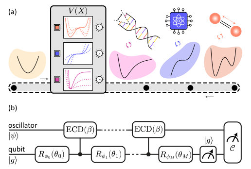
<figcaption class="paper-figure-caption"><b>Fig 1.</b> FIG. 1. Programmable non-Gaussian phase gates. (a) We engineer distinct non-Gaussian phase gates corre- sponding to different potentials V (X) on demand by changing the parameters of a single calibrated circuit template. Three examples implemented in this work are illustrated: a cubic phase gate (purple), the canonical non-Gaussian primitive for continuous-variable quantum information processing; an asymmetric double well (orange), relevant to proton-transfer dynamics in hydrogen-bonded systems such as DNA base pairs; and a Morse potential (pink), describing the vibrational modes of diatomic molecules. (b) Modular circuit diagram for engineering an order-M non-Gaussian phase gate in cQED: M...</figcaption>
</figure>
<figure class="paper-figure-card">
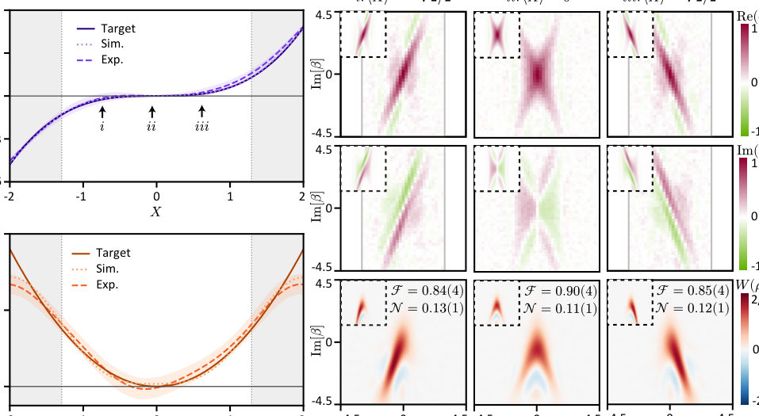
<figcaption class="paper-figure-caption"><b>Fig 2.</b> FIG. 2. Cubic phase gate and non-Gaussian states. (a) The potential and (b) the pointwise force. Target: the pro- grammed potential. Sim: the finite-order compiled circuit carried through coherent-probe sampling and the same deconvolution as the data. The simulated circuit is with unitary qubit-conditioned displacements and qubit rotations, with no decoherence or pulse simulation. Exp: the experimental reconstruction, with shading giving the 95% bootstrap confidence interval in both panels. (c) Output states for coherent inputs at ⟨ˆ X⟩0 ≈{− √</figcaption>
</figure>
<figure class="paper-figure-card">
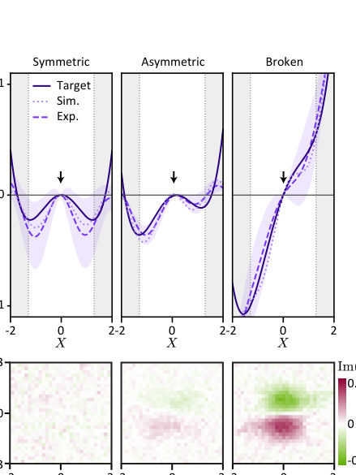
<figcaption class="paper-figure-caption"><b>Fig 3.</b> FIG. 3. Programmable double-well potentials. (a) The reconstructed potentials for the symmetric, asymmetric and broken targets. Target: the programmed potential. Sim: the finite-order compiled circuit carried through coherent-probe sampling and the same deconvolution as the data. Exp: the experimental reconstruction. (b) Imaginary part Im[C(β)] of the characteristic function for a vacuum input, for the sym- metric (left), asymmetric (middle) and broken (right) poten- tials.</figcaption>
</figure>
<figure class="paper-figure-card">
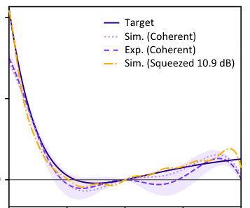
<figcaption class="paper-figure-caption"><b>Fig 4.</b> FIG. 4. Morse potential. Target: the programmed Morse. Sim. (Coherent): the compiled M = 13 circuit carried through coherent-probe sampling and the same deconvolution as the data, which retains harmonics |n| ≤2. Exp. (Coher- ent): the experimental reconstruction under those same con- ditions, with 95% bootstrap shading. Sim. (Squeezed 10.9 dB): the same compiled circuit sampled by squeezed probes and reconstructed retaining |n| ≤7, the bandwidth 10.9 dB of position squeezing admits at the noise amplification the co- herent probes already incur.</figcaption>
</figure>
</div>

<p><strong>Summary.</strong> This paper presents a systematic method to program anharmonic potentials in a superconducting harmonic oscillator using a transmon qubit. By employing bosonic quantum signal processing, the authors successfully implemented and characterized various potentials, including cubic, double-well, and Morse forms. This establishes a practical, reconfigurable route for advanced continuous-variable quantum simulation.</p>
<p><strong>Why it may be interesting.</strong> This work provides a concrete, hardware-validated pathway to engineer complex, non-Gaussian potentials in a superconducting circuit, which is crucial for simulating molecular dynamics and other non-linear quantum processes.</p>
<details>
<summary>Detailed structure</summary>
<p><strong>Main problem.</strong> The primary challenge is realizing programmable non-Gaussian phase gates, which correspond to implementing anharmonic potentials, for continuous-variable quantum simulation.</p>
<p><strong>Main result.</strong> The authors successfully demonstrated a systematic framework to engineer and characterize anharmonic potentials, including cubic, double-well, and approximate Morse potentials, on a superconducting circuit.</p>
<p><strong>Method.</strong> They use bosonic quantum signal processing (QSP) to compile the target phase gate into a circuit of qubit rotations and oscillator displacements, followed by pointwise force reconstruction from coherent-state probes.</p>
<p><strong>Model / system.</strong> The platform is a superconducting harmonic oscillator coupled dispersively to a transmon qubit (bosonic cQED). The system is used to simulate potentials $V(\hat{X})$ via the gate $e^{-iV(\hat{X})}$.</p>
<p><strong>Key observables.</strong> Gate fidelity, Wigner negativity, and the reconstructed force profile $V'(\hat{X})$ are key diagnostics used to validate the engineered potentials.</p>
<p><strong>Important parameters / regimes.</strong> The fidelity is high ($\ge 0.84$), and the reconstruction is validated by comparing the measured force profile against the target potential, especially for the cubic and double-well cases.</p>
<p><strong>Assumptions / limitations.</strong> The reconstruction fidelity is limited by the finite bandwidth of the Gaussian deconvolution process, and the process relies on the dispersive coupling interaction.</p>
<p><strong>Figures summary.</strong> Figures illustrate the modular circuit diagram for implementing various non-Gaussian gates (cubic, double-well, Morse) and compare the reconstructed force profiles against the target potentials.</p>
<p><strong>Paper structure.</strong> The paper systematically demonstrates the framework by first implementing a cubic phase gate, then engineering and validating double-well potentials relevant for tunneling, and finally achieving an approximate Morse gate, while also testing parity symmetry.</p>
</details>
<details>
<summary>Abstract</summary>
<p>Continuous-variable quantum systems offer a resource-efficient route to universal quantum information processing and analogue quantum simulation of real-world processes, such as molecular physics and chemical reactions. Realising these applications, however, requires non-Gaussian operations that implement anharmonic potentials, which are challenging to engineer on demand. Here, we demonstrate a systematic framework to implement programmable non-Gaussian phase gates $e^{-iV(\hat{X})}$, corresponding to the impulsive action of a potential $V(\hat{X})$, in a superconducting harmonic oscillator coupled to a transmon qubit. Using modular circuits derived from bosonic quantum signal processing, we realise a range of target anharmonic potentials on a single piece of hardware by varying a set of qubit rotations interleaved with a fixed calibrated control unitary. We first demonstrate a cubic phase gate, a key ingredient for universal quantum information processing. The resulting high-fidelity non-Gaussian states and the potential reconstructed using our pointwise force reconstruction method jointly confirm the cubic nature of the target gate. We then engineer a family of double-well potentials, relevant models of tunnelling and biased transfer processes, and experimentally validate the double-well topology and the tunable asymmetry. Finally, we engineer an approximate Morse gate, a step towards realistic potentials of molecular vibrational systems, and provide a concrete path towards high-quality engineering and reconstruction of the exponential form. Together, these results establish a practical and reconfigurable route towards continuous-variable quantum information processing and anharmonic quantum simulation.</p>
</details>
<p><sub><a href="#top">↑ back to top</a></sub></p>

<p><a id="paper-2609.02009"></a></p>
<h3 id="bell-inequality-violation-with-momentum-entangled-massive-particles"><a href="http://arxiv.org/abs/2609.02009v1">Bell inequality violation with momentum-entangled massive particles</a></h3>
<p><strong>Authors:</strong> Y. S. Athreya, S. Kannan, X. T. Yan, K. V. Kheruntsyan, A. G. Truscott, S. S. Hodgman<br>
<strong>Type:</strong> experiment · <strong>Category:</strong> other · <strong>PDF:</strong> <a href="https://arxiv.org/pdf/2609.02009v1">https://arxiv.org/pdf/2609.02009v1</a><br>
<strong>Analysis basis:</strong> full PDF text, analyzed in chunks
<strong>Topic relevance:</strong> <code>analog quantum simulation</code> <strong>3/5</strong> · <code>QC/QI experiment</code> <strong>2/5</strong> · <code>interference shaping light</code> <strong>2/5</strong> · <code>quantum measurements</code> <strong>2/5</strong> · <code>quantum optics experiment</code> <strong>1/5</strong></p>
<div class="figure-strip-hint">↔ Scroll figures horizontally</div>
<div class="paper-figures-scroll">
<figure class="paper-figure-card">
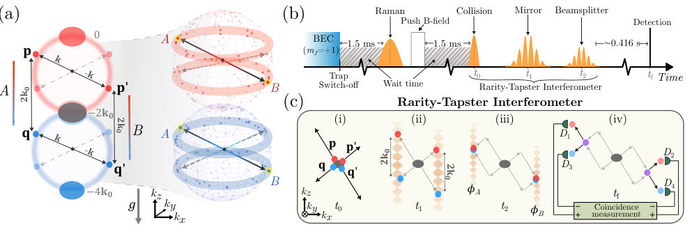
<figcaption class="paper-figure-caption"><b>Fig 1.</b> FIG. 1. Experimental schematic and Rarity-Tapster atom interferometer sequence. (a) A Bragg collision pulse at t0 coherently splits the 4He∗(mJ = 0) condensate into momentum orders 0, −2ℏk0, and −4ℏk0. The 0 and −2ℏk0 components (red), and the −2ℏk0 and −4ℏk0 components (blue), collide to produce two spherical s-wave scattering halos of entangled atom pairs. Within each halo, region A denotes the torus-shaped region above the halo equator and contains the modes {p} and {q}, while region B denotes the corresponding torus-shaped region below the halo equator and contains the modes {p′} and {q′}. The pairs (p, p′) and (q, q′) are entangled through momentum conservation of the underlying...</figcaption>
</figure>
<figure class="paper-figure-card">
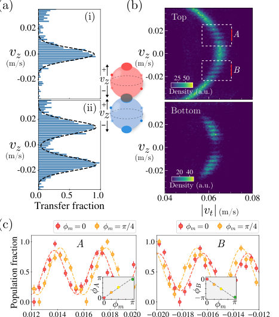
<figcaption class="paper-figure-caption"><b>Fig 2.</b> FIG. 2. Characterization of the dual-resonant Bragg pulse. (a) Transfer fraction as a function of vertical velocity vz. (i) For ωm = 0, the Bragg pulse is a standard single- frequency pulse with a single resonance at the halo equator (vz = 0). (ii) For ωm = 2π×21 kHz, the dual-resonant Bragg pulse exhibits two resonances at vz = ±0.016 m s−1, corre- sponding to the off-equatorial halo regions A and B. The peak transfer efficiency is 92(4)%. (b) Two-dimensional his- togram of the Ramsey-like interferometer [27] output, plot- ted as vertical velocity vz versus transverse velocity vt (inte- grated over the x-y plane) for the ‘Top’ and ‘Bottom’ halos. Interference fringes are observed in the...</figcaption>
</figure>
<figure class="paper-figure-card">
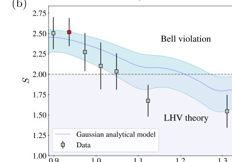
<figcaption class="paper-figure-caption"><b>Fig 3.</b> FIG. 3. Bell correlation measurements and CHSH- Bell parameter. (a) Measured Bell correlation function E(ϕA, ϕB) for three phase configurations. The red, blue, and green data sets correspond to (ϕA, ϕB) = (−1.44, ϕ), (−3.01, ϕ), and (ϕ, −4.58), respectively. The data are fit- ted with sinusoidal functions of the form given in Eq. (5), yielding an average visibility of V = 0.93(2). Error bars are estimated using a binomial proportion estimator [44]. The data are obtained from 38,300 experimental shots. (b) CHSH-Bell parameter S as a function of detector bin size, in units of the back-to-back momentum correlation length σBB. Grey points show the measured values, with the red point in-...</figcaption>
</figure>
</div>

<p><strong>Summary.</strong> This experiment reports the first violation of a Bell inequality using the momentum states of massive particles, specifically metastable helium atoms. By employing a dual-resonant Bragg interferometer, the researchers achieved independent control over local measurement bases for momentum-entangled pairs. The measured Bell parameter $S=2.52$ confirms quantum nonlocality in the external degrees of freedom of atoms.</p>
<p><strong>Why it may be interesting.</strong> This work directly extends quantum nonlocality tests from internal quantum variables (like spin) to the external, motional degrees of freedom of massive particles, providing a crucial testbed for quantum mechanics in the context of matter waves and potentially gravity.</p>
<details>
<summary>Detailed structure</summary>
<p><strong>Main problem.</strong> The primary goal was to demonstrate the violation of a Bell inequality using the motional (external) degrees of freedom of massive particles, an experimental frontier in quantum nonlocality testing.</p>
<p><strong>Main result.</strong> The authors successfully measured a CHSH Bell parameter of $S = 2.52 \pm 0.17$, significantly violating the local realistic bound ($S \le 2$), confirming quantum nonlocality in atomic momentum states.</p>
<p><strong>Method.</strong> The experiment utilized a matter-wave interferometer sequence (Rarity-Tapster type) applied to momentum-entangled pairs of metastable helium atoms.</p>
<p><strong>Model / system.</strong> The platform involves ultracold metastable helium atoms ($  ext{He}^*$) prepared in a Bose-Einstein condensate. The key technical advance is the use of a dual-resonant Bragg lattice, which allows for the independent selection of local measurement bases for the two spatially separated momentum modes.</p>
<p><strong>Key observables.</strong> The Clauser-Horne-Shimony-Holt (CHSH) Bell parameter ($S$), the Bell correlation function $E(\phi_A, \phi_B)$, and joint atom detection probabilities $P_{k,k'}$.</p>
<p><strong>Important parameters / regimes.</strong> The measured value $S = 2.52 \pm 0.17$, the local realistic bound $S \le 2$, and the visibility $V = 0.93(2)$.</p>
<p><strong>Assumptions / limitations.</strong> The analysis assumes the two visibility reduction effects (Higher-Order Fock states and finite detection window) are independent, and the scattering process is in the low-gain regime.</p>
<p><strong>Figures summary.</strong> Figures illustrate the experimental schematic, the Rarity-Tapster atom interferometer sequence, and measurements of the Bell correlation function $E(\phi_A, \phi_B)$ showing clear phase dependence.</p>
<p><strong>Paper structure.</strong> The paper details the experimental setup, focusing on the dual-resonant Bragg lattice to enable independent phase control. It then describes the measurement of joint detection probabilities, constructs the Bell correlation function, and finally calculates the CHSH parameter to demonstrate the violation.</p>
</details>
<details>
<summary>Abstract</summary>
<p>Bell's theorem revealed the fundamental incompatibility between the predictions of quantum mechanics and local realism. Bell inequality violations have since demonstrated quantum nonlocality using photons and internal states of massive particles, but never using their motional states. Here we report the first Bell inequality violation in the motional states of massive particles. Using momentum-entangled pairs of metastable helium atoms manipulated by matter-wave interferometry, we measure a Clauser-Horne-Shimony-Holt (CHSH) Bell parameter of $S = 2.52 \pm 0.17$, violating the CHSH-Bell inequality ($S \le 2$). Our work completes a long-standing objective in quantum atom optics by extending Bell tests from internal quantum variables to the external degrees of freedom of massive particles, opening a new regime for exploring quantum nonlocality in matter waves and for investigating the interplay between quantum mechanics and gravity.</p>
</details>
<p><sub><a href="#top">↑ back to top</a></sub></p>

<p><a id="paper-2609.02613"></a></p>
<h3 id="thermodynamic-optimization-of-thermal-landscapes-and-energy-barriers-in-a-brownian-heat-engine"><a href="http://arxiv.org/abs/2609.02613v1">Thermodynamic optimization of thermal landscapes and energy barriers in a Brownian heat engine</a></h3>
<p><strong>Authors:</strong> Mesfin Taye<br>
<strong>Type:</strong> theory · <strong>Category:</strong> statistical mechanics · <strong>PDF:</strong> <a href="https://arxiv.org/pdf/2609.02613v1">https://arxiv.org/pdf/2609.02613v1</a><br>
<strong>Analysis basis:</strong> full PDF text, analyzed in chunks
<strong>Topic relevance:</strong> <code>methods for driven-dissipative</code> <strong>3/5</strong> · <code>Frenkel-Kontorova</code> <strong>1/5</strong> · <code>Keldysh / 2PI / non-Gaussian methods</code> <strong>1/5</strong> · <code>correlated / nonlocal dissipation</code> <strong>1/5</strong> · <code>driven-dissipative phase transition</code> <strong>1/5</strong> · <code>non-equilibrium universality</code> <strong>1/5</strong> · <code>quantum measurements</code> <strong>1/5</strong></p>
<div class="figure-strip-hint">↔ Scroll figures horizontally</div>
<div class="paper-figures-scroll">
<figure class="paper-figure-card">
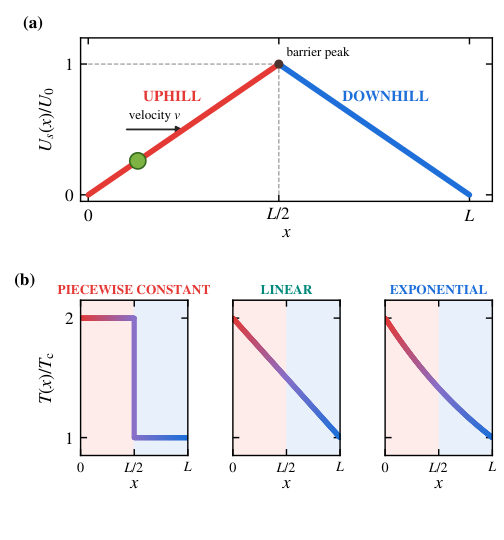
<figcaption class="paper-figure-caption"><b>Fig 1.</b> FIG. 1. (a) Symmetric triangular potential Us(x) of Eq. (10); the particle climbs the ascending (uphill) branch on 0 &lt; x &lt; L/2 and descends the downhill branch on L/2 &lt; x &lt; L, and a net forward velocity v = LJ arises when the thermal field breaks detailed balance. (b) The three canonical thermal landscapes obeying the box constraint of Eq. (13) for Th = 2Tc: the piecewise-constant profile is hot on the entire uphill branch and cold on the entire downhill branch, while the linear and exponential profiles decrease continuously from Th at x = 0 to Tc at x = L.</figcaption>
</figure>
<figure class="paper-figure-card">
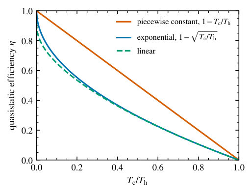
<figcaption class="paper-figure-caption"><b>Fig 2.</b> FIG. 2. Exact quasistatic efficiency, Eq. (45), versus Tc/Th for the piecewise-constant [Eq. (57)], exponential [Eq. (68)], and linear [Eq. (62)] profiles. The piecewise-constant profile attains the box-constrained maximum 1 −Tc/Th for every temperature ratio; the exponential profile gives the Curzon– Ahlborn form.</figcaption>
</figure>
<figure class="paper-figure-card">
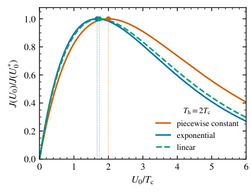
<figcaption class="paper-figure-caption"><b>Fig 3.</b> FIG. 3. Barrier-height dependence of the current in the acti- vation estimate, Eq. (97), for Th = 2Tc and zero load. Each curve is normalized by its own maximum, so the figure displays the shift of the optimal barrier with the temperature profile rather than an ordering of peak currents; markers and dotted verticals locate the optima U ∗ 0 = Tact of Eq. (100), which decrease from the piecewise-constant to the exponential to the linear profile [Eqs. (101)–(103)]. Exact optima follow from Eq. (89).</figcaption>
</figure>
<figure class="paper-figure-card">
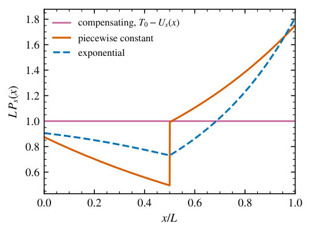
<figcaption class="paper-figure-caption"><b>Fig 4.</b> FIG. 4. Exact stationary densities Ps(x) from Eq. (31), eval- uated with the element-exact quadrature of Appendix E, for L = γ = Tc = 1, Th = 2, U0 = 0.8, and f = 0.25. The potential-compensating profile T0 −Us(x) with T0 = 1.9 yields the exactly uniform density that attains the Shannon-entropy bound (129); the piecewise-constant and exponential fields yield nonuniform densities and strictly smaller entropy. The piecewise-constant-profile density jumps at x = L/2 because the interface rule of Sec. II makes TP, not P, continuous across a temperature discontinuity.</figcaption>
</figure>
<figure class="paper-figure-card">
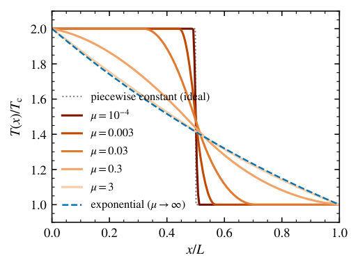
<figcaption class="paper-figure-caption"><b>Fig 5.</b> FIG. 5. Numerically optimized efficiency profiles from Eq. (152) with fixed endpoints T(0) = 2Tc, T(L) = Tc and box bounds Tc ≤T ≤Th, for logarithmic-gradient penalties µ = 10−4–3 (in units of Tc; darker to lighter with increasing µ), obtained by the gradient-based method of Appendix E. As µ →0 the optimum approaches the ideal hot/cold piecewise- constant profile (dotted); as µ grows it converges to the expo- nentially decreasing profile (dashed), the unique minimizer of the penalty functional at fixed endpoints.</figcaption>
</figure>
</div>

<p><strong>Summary.</strong> This paper revolutionizes the study of Brownian heat engines by formulating an inverse-design problem: instead of calculating performance for a given temperature profile, it determines the optimal profile. It rigorously shows that the optimal design differs significantly between the ideal quasistatic limit and the realistic finite-current regime. This provides powerful tools for engineering non-equilibrium energy conversion devices.</p>
<p><strong>Why it may be interesting.</strong> The work provides a rigorous framework for optimizing non-equilibrium steady states by treating the thermal landscape itself as a control variable, which is a key concept in open quantum systems and energy harvesting.</p>
<details>
<summary>Detailed structure</summary>
<p><strong>Main problem.</strong> The paper tackles the inverse-design problem in Brownian heat engines: determining the optimal temperature profile and energy barrier to maximize a chosen thermodynamic objective.</p>
<p><strong>Main result.</strong> While the quasistatic limit yields an efficiency optimum using a hot-uphill/cold-downhill profile, finite current optimization requires a different profile, governed by a balance between thermal rectification gain and transport resistance.</p>
<p><strong>Method.</strong> The authors derive exact functional gradients and box-constrained optimality conditions by analyzing the stationary current and probability density derived from the Smoluchowski equation.</p>
<p><strong>Model / system.</strong> The system is an overdamped Brownian particle moving in a symmetric triangular periodic potential under a constant opposing load, subjected to a spatially varying temperature field T(x).</p>
<p><strong>Key observables.</strong> Efficiency ($\eta$), stationary current ($J$), power, and configurational Shannon Entropy.</p>
<p><strong>Important parameters / regimes.</strong> Temperature bounds ($T_c, T_h$), opposing load, and the ratio of cycle affinity to transport resistance.</p>
<p><strong>Assumptions / limitations.</strong> The analysis assumes the system can be controlled by setting the temperature profile T(x) and the barrier height $U_0$ over the admissible class.</p>
<p><strong>Figures summary.</strong> Figure 1 illustrates the symmetric triangular potential and compares three canonical thermal landscapes (piecewise constant, etc.).</p>
<p><strong>Paper structure.</strong> The paper moves from deriving the exact stationary current and density for arbitrary T(x) to analyzing the quasistatic limit, and finally to deriving the functional gradient and optimality conditions for finite current optimization.</p>
</details>
<details>
<summary>Abstract</summary>
<p>Spatial temperature fields in Brownian heat engines are commonly prescribed \emph{a priori}, and the resulting transport and thermodynamic properties are then calculated. Here we formulate the complementary inverse-design problem: determining the temperature profile and barrier height that optimize a chosen thermodynamic objective. We consider an overdamped Brownian particle in a symmetric triangular periodic potential under a constant opposing load and derive the exact stationary current and probability density for an arbitrary bounded temperature field, $\Tc\le T(x)\le\Th$. In the quasistatic limit, the efficiency becomes an exact functional of two inverse-temperature integrals over the uphill and downhill branches. Its rigorous global maximum under the pointwise temperature bounds is $η_{\max}=1-\Tc/\Th$, attained uniquely, up to sets of measure zero, by the hot-uphill/cold-downhill piecewise-constant profile. At finite current, however, the optimization changes qualitatively because the current is determined jointly by the cycle affinity and a nonlocal transport resistance. We derive the exact functional gradient and the corresponding box-constrained optimality conditions, showing that the current- or power-maximizing profile generally differs from the quasistatic efficiency optimum. For any prescribed temperature field, the current-maximizing barrier satisfies an exact balance between the marginal gain in thermal rectification and the marginal increase in transport resistance, with the characteristic estimate $U_0^*\simeq T_{\rm act}$, where $T_{\rm act}^{-1}=(2/L)\int_0^{L/2}\dd x/T(x)$.</p>
</details>
<p><sub><a href="#top">↑ back to top</a></sub></p>

<p><a id="paper-2609.02491"></a></p>
<h3 id="generalised-random-parking-for-trapeziums-on-a-strip"><a href="http://arxiv.org/abs/2609.02491v1">Generalised Random Parking for Trapeziums on a Strip</a></h3>
<p><strong>Authors:</strong> David Kramer-Bang, Stjepan Šebek<br>
<strong>Type:</strong> theory · <strong>Category:</strong> statistical mechanics · <strong>PDF:</strong> <a href="https://arxiv.org/pdf/2609.02491v1">https://arxiv.org/pdf/2609.02491v1</a><br>
<strong>Analysis basis:</strong> full PDF text, analyzed in chunks
<strong>Topic relevance:</strong> <code>non-equilibrium universality</code> <strong>3/5</strong> · <code>Keldysh / 2PI / non-Gaussian methods</code> <strong>2/5</strong> · <code>methods for driven-dissipative</code> <strong>2/5</strong> · <code>analog quantum simulation</code> <strong>1/5</strong></p>
<div class="figure-strip-hint">↔ Scroll figures horizontally</div>
<div class="paper-figures-scroll">
<figure class="paper-figure-card">
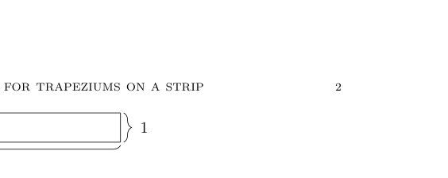
<figcaption class="paper-figure-caption"><b>Fig 1.</b> Figure 1. Strip of length x and height 1.</figcaption>
</figure>
<figure class="paper-figure-card">
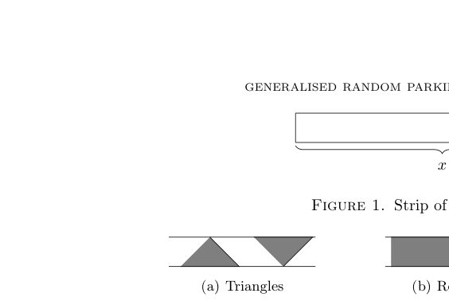
<figcaption class="paper-figure-caption"><b>Fig 2.</b> Figure 2. Different shapes of deposited objects.</figcaption>
</figure>
<figure class="paper-figure-card">
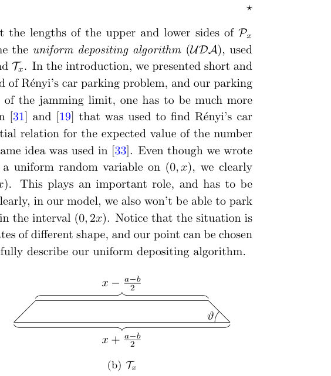
<figcaption class="paper-figure-caption"><b>Fig 3.</b> Figure 3. Illustrations of the parallelogram Px and trapezium Tx, which appear in the scheme of depositing trapeziums.</figcaption>
</figure>
<figure class="paper-figure-card">
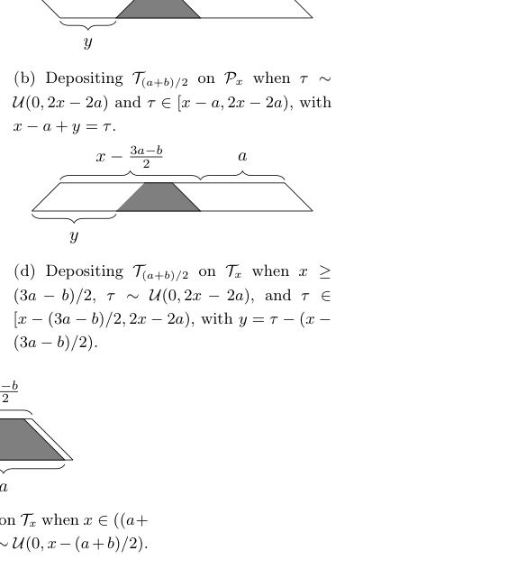
<figcaption class="paper-figure-caption"><b>Fig 4.</b> Figure 4. Illustration of all the possible scenarios of the trapezium T(a+b)/2 arriving on strips Px and Tx, defined by the scheme UDA in Definition 1.2.</figcaption>
</figure>
<figure class="paper-figure-card">
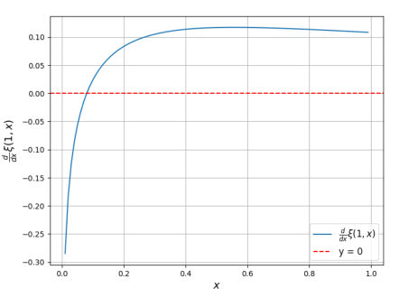
<figcaption class="paper-figure-caption"><b>Fig 5.</b> Figure 5. Finding the worst trapezium.</figcaption>
</figure>
</div>

<p><strong>Summary.</strong> This paper generalizes a classic random parking problem to model the random deposition of isosceles trapeziums on a strip. It derives an exact formula for the jamming limit and proves that the variance of the process converges to the same leading asymptotic density regardless of the specific geometry of the remaining substrate. This provides deep insights into the geometry-dependent nature of random packing processes.</p>
<p><strong>Why it may be interesting.</strong> While the topic is classical statistical mechanics (packing/jamming), the rigorous mathematical techniques involving recursive relations, asymptotic analysis, and the study of limiting densities are highly relevant to understanding critical phenomena and non-equilibrium dynamics in quantum many-body systems.</p>
<details>
<summary>Detailed structure</summary>
<p><strong>Main problem.</strong> The paper generalizes Rényi's car-parking problem to study the random sequential deposition of isosceles trapeziums on a strip.</p>
<p><strong>Main result.</strong> An explicit formula for the jamming constant is derived, showing that the least efficient shape is a genuine trapezium, and the asymptotic variance for related processes is shown to be identical for two different substrate geometries.</p>
<p><strong>Method.</strong> The analysis uses recursive constructions and moment calculations to derive finite-size asymptotics for the expected number and variance of deposited particles.</p>
<p><strong>Model / system.</strong> The model involves depositing isosceles trapeziums randomly on a strip substrate, leading to a recursive process that generates two distinct, but asymptotically equivalent, substrate geometries: a parallelogram and a trapezium.</p>
<p><strong>Key observables.</strong> Parking Constant ($    heta$), Expected Number ($\mu(x)$), and Variance ($\sigma^2(x)$) of deposited trapeziums.</p>
<p><strong>Important parameters / regimes.</strong> The lengths of the two bases of the trapezium ($a$ and $b$), and the substrate size ($x$).</p>
<p><strong>Assumptions / limitations.</strong> The analysis assumes the substrate is a strip and relies on the asymptotic equivalence of the two resulting substrate types ($P_x$ and $T_x$).</p>
<p><strong>Figures summary.</strong> Figures illustrate the strip substrate, different deposited shapes (triangles, rectangles, trapeziums), and the two relevant recursive substrate geometries (parallelogram and trapezium).</p>
<p><strong>Paper structure.</strong> The paper establishes the general problem, derives the explicit formula for the parking constant, calculates finite-size asymptotics for moments, and proves the asymptotic equality of the variance for the two underlying substrate types.</p>
</details>
<details>
<summary>Abstract</summary>
<p>In this article, we study a generalisation of Rényi's car-parking problem in which isosceles trapeziums are sequentially deposited on a strip. We derive an explicit formula for the parking constant in terms of the lengths of the two bases, recovering the classical rectangular and triangular models as special cases. We further obtain quantitative finite-size asymptotics for both the expected number and the variance of deposited trapeziums, with convergence rates that depend explicitly on the geometry of the deposited particle. In particular, although the recursive construction involves two different substrate geometries, their variances have the same leading asymptotic density. Finally, we show that the parking constant depends non-monotonically on the ratio of the two base lengths and possesses a unique minimiser, so that the least efficient shape is a genuine trapezium rather than a triangle.</p>
</details>
<p><sub><a href="#top">↑ back to top</a></sub></p>

<p><a id="paper-2609.01719"></a></p>
<h3 id="numerical-simulation-of-d-waves-quantum-advantage-experiment-with-time-dependent-variational-monte-carlo"><a href="http://arxiv.org/abs/2609.01719v1">Numerical simulation of D-Wave's quantum advantage experiment with time-dependent variational Monte Carlo</a></h3>
<p><strong>Authors:</strong> Roeland Wiersema<br>
<strong>Type:</strong> theory · <strong>Category:</strong> disordered systems and neural networks · <strong>PDF:</strong> <a href="https://arxiv.org/pdf/2609.01719v1">https://arxiv.org/pdf/2609.01719v1</a><br>
<strong>Analysis basis:</strong> full PDF text, analyzed in chunks
<strong>Topic relevance:</strong> <code>analog quantum simulation</code> <strong>3/5</strong> · <code>methods for driven-dissipative</code> <strong>3/5</strong> · <code>Keldysh / 2PI / non-Gaussian methods</code> <strong>2/5</strong></p>
<div class="figure-strip-hint">↔ Scroll figures horizontally</div>
<div class="paper-figures-scroll">
<figure class="paper-figure-card">
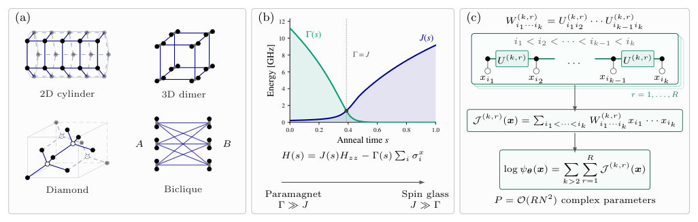
<figcaption class="paper-figure-caption"><b>Fig 1.</b> FIG. 1. Overview of the quantum-annealing simulation. (a) Representative 2D cylinder, 3D dimer, diamond, and biclique problem graphs. (b) Annealing schedule interpolating between the transverse-field paramagnet and the spin-glass Hamiltonian. (c) Path-factorized k-body correlator ansatz with channel rank R and O(RN 2) complex parameters. We omit the global phase and odd terms due to symmetry considerations.</figcaption>
</figure>
<figure class="paper-figure-card">
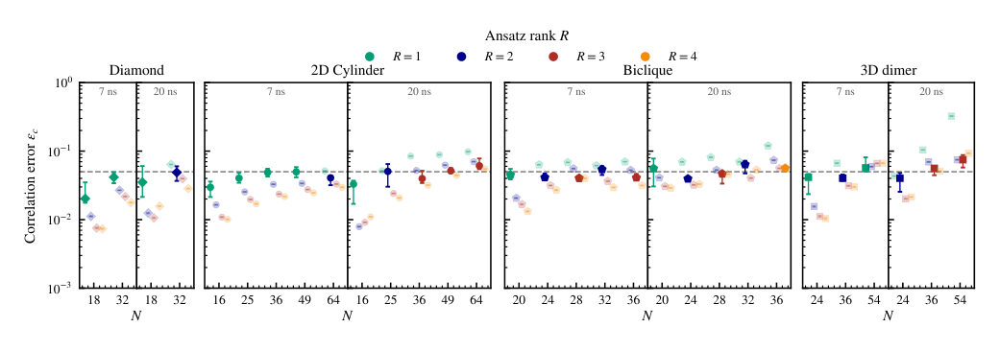
<figcaption class="paper-figure-caption"><b>Fig 2.</b> FIG. 2. Correlation error of the t-VMC ansatz at the end of the anneal. Final-time (s = 1) ZZ-correlation error ϵc relative to the MPS reference, for every simulated topology. Within each topology, we show the two anneal times ta = 7 ns and ta = 20 ns. The markers are colored by ansatz rank R ∈{1, 2, 3, 4} and horizontally offset by rank. The correlation error ϵc is estimated using 221 = 2097152 samples. To assess stability across disorder realizations, we repeat the optimization for five instances at selected ranks that reach approximately 5% error (dashed line); error bars indicate the minimum and maximum, and the marker indicates the median.</figcaption>
</figure>
<figure class="paper-figure-card">
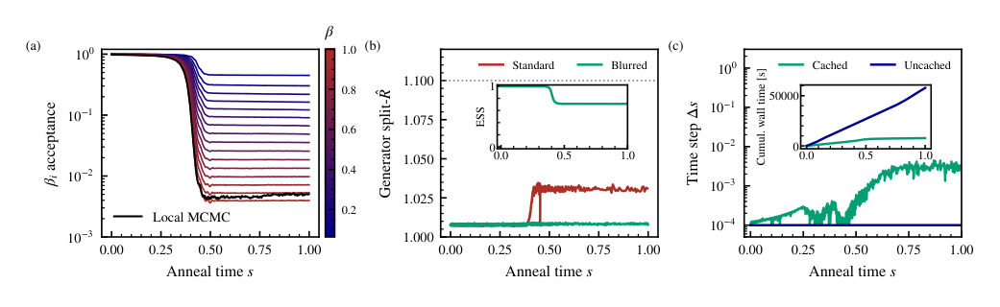
<figcaption class="paper-figure-caption"><b>Fig 3.</b> FIG. 3. Ablation study of methodological components of t-VMC simulation. (a) Local MCMC dynamics versus replica exchange Monte Carlo. At low temperatures, acceptance rates freeze within each chain, while at high temperatures, acceptance rates remain reasonable. The adjacent-replica exchange rate fluctuates between 0.239 and 0.288, enabling configurations to diffuse along the temperature ladder and reach the physical β0 replica. The dashed line shows the freezing of the local MCMC dynamics. The final error is ϵc = 0.4096 ± 0.0027 for local sampling, whereas for replica exchange we recover the &lt; 5% error ϵc = 0.0331 ± 0.0003. (b) Standard sampling versus blurred sampling. With the standard...</figcaption>
</figure>
<figure class="paper-figure-card">
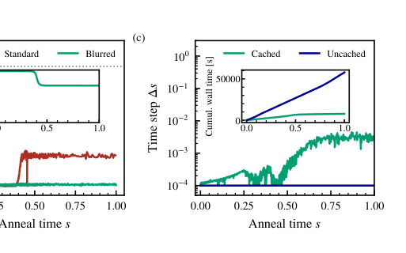
<figcaption class="paper-figure-caption"><b>Fig 4.</b> Fig. 2 were obtained with the same hyperparameters, so a more fine-tuned choice of the regularization and sam- pling settings could potentially drive down the errors. We conclude from these experiments that the diamond topol- ogy is the easiest for t-VMC simulate, and the observed difficulty increases in the order diamond, 2D cylinder, biclique, and 3D dimer. a. Sampler comparison. To assess the quality of the sampler, we can monitor three complementary diagnos- tics. First, we can track the acceptance rate within each replica. High-temperature replicas must maintain suffi- ciently high local acceptance rates throughout the an- neal to explore the state space effectively. Second, we can...</figcaption>
</figure>
<figure class="paper-figure-card">
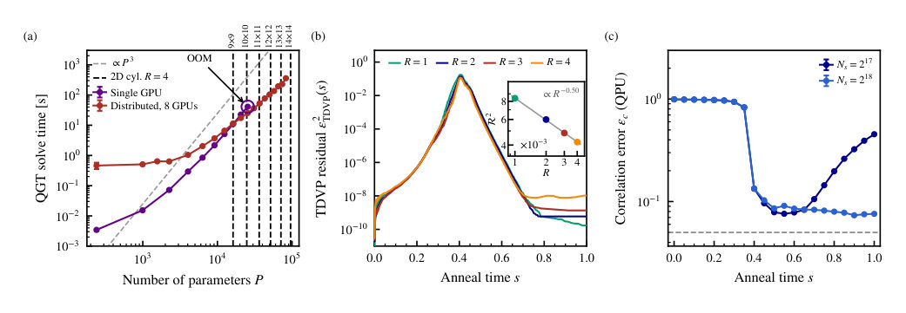
<figcaption class="paper-figure-caption"><b>Fig 5.</b> FIG. 4. Scaling analysis of the t-VMC simulation (a) Inverting the QGT of the correlator state with K = (2, 4) and R = 1 for system sizes N = {16, 32, . . . , 320}. Error bars show the standard deviation over 10 random initializations. The vertical dashed line indicates the number of parameters at which a single NVIDIA H200 would run out of memory. (b) Squared TDVP residual ε2 TDVP(s) along the anneal for the 8 × 8 2D cylinder. Curves are smoothed using a rolling window of 100 steps. The inset shows the integrated TDVP error R2 = R 1 0 ε2 TDVP(s)ds as a function of rank; the error decreases approximately as R−0.50. (c) Correlation error compared to the QPU as a function of anneal time for a...</figcaption>
</figure>
</div>

<p><strong>Summary.</strong> This paper presents a sophisticated numerical simulation of quantum annealing dynamics using time-dependent variational Monte Carlo (t-VMC). By employing advanced sampling techniques like Parallel Tempering and Blurred Sampling, the authors successfully simulate spin-glass models on complex graphs. The results establish a rigorous classical benchmark for assessing the computational feasibility and accuracy of simulating quantum hardware performance.</p>
<p><strong>Why it may be interesting.</strong> The work provides a highly detailed, state-of-the-art classical benchmark for simulating quantum annealing dynamics, offering crucial insights into the numerical limitations and required resources for simulating quantum advantage experiments.</p>
<details>
<summary>Detailed structure</summary>
<p><strong>Main problem.</strong> The paper addresses the computational challenge of accurately simulating the non-equilibrium dynamics of frustrated quantum spin systems, specifically those relevant to quantum annealing experiments.</p>
<p><strong>Main result.</strong> The authors successfully simulate the D-Wave annealing protocol on complex topologies, achieving correlation errors comparable to the quantum annealer results, even for challenging instances where other methods fail.</p>
<p><strong>Method.</strong> They employ Time-Dependent Variational Monte Carlo (t-VMC) using a structured correlator state ansatz, stabilized by advanced sampling techniques like Parallel Tempering and Blurred Sampling.</p>
<p><strong>Model / system.</strong> The system is a transverse-field Ising model defined on various spin-glass topologies (e.g., 2D cylinder, biclique). The dynamics are simulated by evolving the variational state according to the time-dependent variational principle.</p>
<p><strong>Key observables.</strong> Two-spin Ising correlations ($C_{ij}$), relative correlation error ($\epsilon_c$), and numerical diagnostics like MCMC acceptance rates and TDVP residuals ($R_2$).</p>
<p><strong>Important parameters / regimes.</strong> Annealing times ($t_a = 7, 20$ ns), variational ansatz rank ($R$), and regularization parameters ($   ext{rcond}$).</p>
<p><strong>Assumptions / limitations.</strong> The primary approximation is projecting the full quantum dynamics onto a variational manifold defined by the correlator product state ansatz. Numerical stability requires advanced sampling and ODE solvers.</p>
<p><strong>Figures summary.</strong> Figures illustrate the simulation setup, the annealing schedule, the ansatz structure, and diagnostic plots comparing correlation errors ($\epsilon_c$) across different topologies and the impact of advanced sampling techniques.</p>
<p><strong>Paper structure.</strong> The paper details the theoretical framework (t-VMC, ansatz construction), presents the numerical implementation challenges (sampling difficulties, stiffness), and validates the method by simulating dynamics on increasingly complex and challenging spin-glass graph structures.</p>
</details>
<details>
<summary>Abstract</summary>
<p>Programmable quantum annealers can realize real-time dynamics of frustrated transverse-field Ising models on large, nontrivial graphs. Recent work by King et al. argued that the classical simulation of such experiments would require exponential computational resources for classical methods such as tensor networks and neural quantum states. Here, we numerically simulate the D-Wave spin-glass annealing protocol with time-dependent variational Monte Carlo (t-VMC) using a correlator state tailored to spin-glass dynamics. For the two-dimensional cylinder, three-dimensional dimer, diamond, and biclique instances considered, at annealing times of 7 and 20 ns, we show that systematically increasing the variational ansatz size enables t-VMC to approximate the final two-spin correlation errors of the quantum processing unit (QPU). We also perform an accurate large-scale simulation of a challenging biclique instance for which no other variational method is known to work, and we find close agreement with the quantum annealer. Through ablation studies, we identify poor Markov-chain mixing, high-variance local-energy estimators, and stochastic Runge-Kutta error estimates as the principal numerical failure modes. We address these numerical issues by using parallel tempering, blurred sampling and an importance-weighted differential equation solver, thereby clarifying the numerical requirements for stable, large-scale t-VMC simulations. Our results extend the frontier of classical simulation while providing a realistic assessment of the computational costs of simulating quantum dynamics at this scale.</p>
</details>
<p><sub><a href="#top">↑ back to top</a></sub></p>

<p><a id="paper-2609.02828"></a></p>
<h3 id="effective-sub-quantum-readout-for-non-monochromatic-axion-signals-in-high-math190math-haloscopes"><a href="http://arxiv.org/abs/2609.02828v1">Effective Sub-Quantum Readout for Non-Monochromatic Axion Signals in High-$Q$ Haloscopes</a></h3>
<p><strong>Authors:</strong> Junu Jeong, Max Silva-Feaver<br>
<strong>Type:</strong> theory · <strong>Category:</strong> other · <strong>PDF:</strong> <a href="https://arxiv.org/pdf/2609.02828v1">https://arxiv.org/pdf/2609.02828v1</a><br>
<strong>Analysis basis:</strong> full PDF text, analyzed in chunks
<strong>Topic relevance:</strong> <code>quantum optics experiment</code> <strong>3/5</strong> · <code>interference shaping light</code> <strong>2/5</strong> · <code>quantum measurements</code> <strong>2/5</strong></p>
<div class="figure-strip-hint">↔ Scroll figures horizontally</div>
<div class="paper-figures-scroll">
<figure class="paper-figure-card">
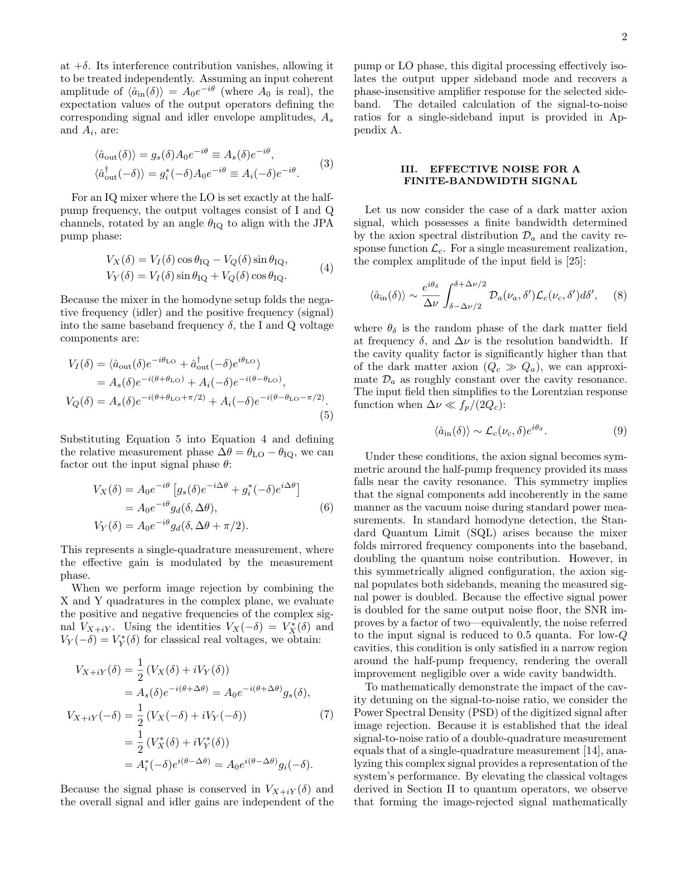
<figcaption class="paper-figure-caption"><b>Fig 1.</b> Low-resolution page preview, page 2</figcaption>
</figure>
<figure class="paper-figure-card">
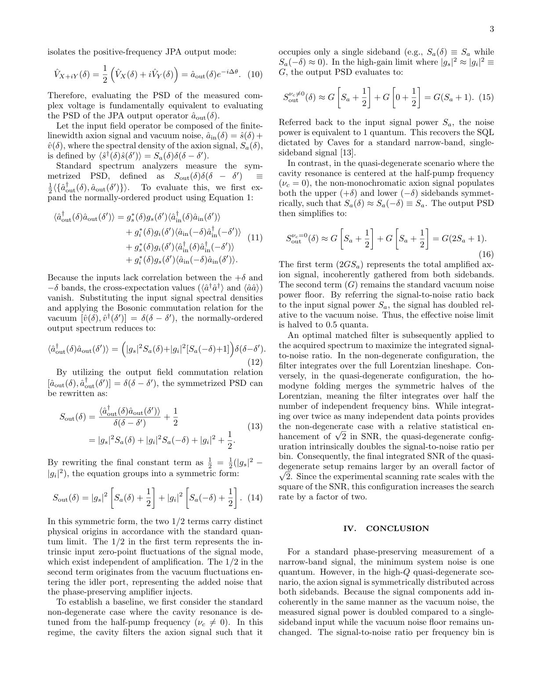
<figcaption class="paper-figure-caption"><b>Fig 2.</b> Low-resolution page preview, page 3</figcaption>
</figure>
<figure class="paper-figure-card">
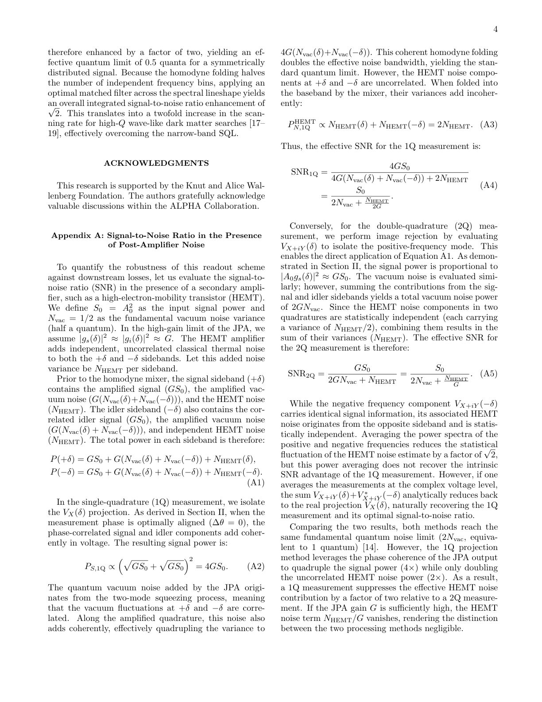
<figcaption class="paper-figure-caption"><b>Fig 3.</b> Low-resolution page preview, page 4</figcaption>
</figure>
<figure class="paper-figure-card">
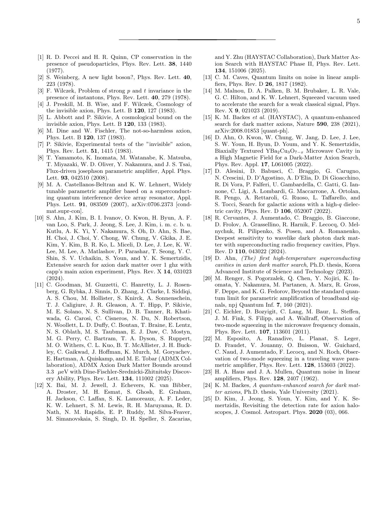
<figcaption class="paper-figure-caption"><b>Fig 4.</b> Low-resolution page preview, page 5</figcaption>
</figure>
</div>

<p><strong>Summary.</strong> This paper details a method to improve the sensitivity of axion dark matter searches in microwave cavities by exploiting the non-monochromatic nature of the axion signal. By carefully tuning the amplifier to operate symmetrically around the cavity resonance, the measured signal power is effectively doubled while the vacuum noise remains constant. This results in a significant reduction of the effective quantum noise limit, enhancing the search capability beyond the standard quantum limit.</p>
<p><strong>Why it may be interesting.</strong> This work is highly relevant to quantum optics and open quantum systems, as it provides a concrete, quantum-limited technique to surpass standard noise constraints in a real-world detection scenario.</p>
<details>
<summary>Detailed structure</summary>
<p><strong>Main problem.</strong> The primary goal is to enhance the sensitivity of axion dark matter searches conducted using microwave cavity haloscopes, which are currently limited by the Standard Quantum Limit (SQL).</p>
<p><strong>Main result.</strong> By exploiting the non-monochromatic nature of the axion signal and operating the amplifier at the half-pump frequency, the effective noise limit can be reduced to $1/\sqrt{2}$ quanta after optimal matched filtering, improving the SNR by a factor of two.</p>
<p><strong>Method.</strong> The authors use quadrature analysis (homodyne readout) on the output of a Josephson Parametric Amplifier (JPA) to combine signal and idler spectral components.</p>
<p><strong>Model / system.</strong> The system involves axion-photon conversion measured in high-Q microwave cavities, amplified by a JPA. The analysis models the output Power Spectral Density (PSD) by considering the symmetric population of signal and idler bands.</p>
<p><strong>Key observables.</strong> Output Power Spectral Density (PSD), Signal-to-Noise Ratio (SNR), and the effective quantum noise limit (quanta per frequency bin).</p>
<p><strong>Important parameters / regimes.</strong> High cavity quality factor ($Q_c \gg Q_a$), operating at the half-pump frequency, and the resulting noise reduction factor of $1/\sqrt{2}$.</p>
<p><strong>Assumptions / limitations.</strong> The analysis assumes the cavity quality factor is much larger than the axion's bandwidth ($Q_c \gg Q_a$) and relies on the signal symmetrically populating both signal and idler bands.</p>
<p><strong>Figures summary.</strong> Not specified in the notes, but the analysis compares the PSD in non-degenerate ($
u_c 
eq 0$) versus quasi-degenerate ($
u_c = 0$) resonance regimes.</p>
<p><strong>Paper structure.</strong> The paper establishes the SQL constraint, develops the theoretical framework using JPA output PSD calculations, compares the non-degenerate and quasi-degenerate regimes, and derives the improved noise limit for the latter.</p>
</details>
<details>
<summary>Abstract</summary>
<p>The search for wave-like dark matter using microwave cavity haloscopes is constrained by the Standard Quantum Limit, which dictates that phase-preserving linear amplification results in a minimum of one quantum of total system noise for a narrow-band signal. We demonstrate that this limit is effectively halved for a non-monochromatic axion signal coupled to a high-$Q$ cavity. By operating a Josephson Parametric Amplifier such that the cavity resonance is centered exactly at the half-pump frequency, the axion signal symmetrically populates both the signal and idler bands. Through quadrature analysis of the homodyne readout, we show that the incoherent sum of these mirrored spectral components doubles the measured signal power while the vacuum noise remains constant. This operation yields an effective noise limit of 0.5 quanta per frequency bin, translating to an overall effective limit of $1/\sqrt{2}$ quanta after optimal matched filtering.</p>
</details>
<p><sub><a href="#top">↑ back to top</a></sub></p>

<p><a id="paper-2609.02827"></a></p>
<h3 id="model-level-synthetic-flux-control-of-hyperchaos-order-and-matched-resource-sensing-in-dissipative-optomechanics"><a href="http://arxiv.org/abs/2609.02827v1">Model-level synthetic-flux control of hyperchaos order and matched-resource sensing in dissipative optomechanics</a></h3>
<p><strong>Authors:</strong> Stella Rolande Mbokop Tchounda, Carolle Tchodimou, Philippe Djorwe, Sifeu Takougang Kingni, Serge Guy Nana Engo<br>
<strong>Type:</strong> theory · <strong>Category:</strong> other · <strong>PDF:</strong> <a href="https://arxiv.org/pdf/2609.02827v1">https://arxiv.org/pdf/2609.02827v1</a><br>
<strong>Analysis basis:</strong> full PDF text, analyzed in chunks
<strong>Topic relevance:</strong> <code>quantum measurements</code> <strong>3/5</strong> · <code>analog quantum simulation</code> <strong>1/5</strong> · <code>correlated / nonlocal dissipation</code> <strong>1/5</strong> · <code>driven-dissipative phase transition</code> <strong>1/5</strong> · <code>methods for driven-dissipative</code> <strong>1/5</strong></p>
<div class="figure-strip-hint">↔ Scroll figures horizontally</div>
<div class="paper-figures-scroll">
<figure class="paper-figure-card">
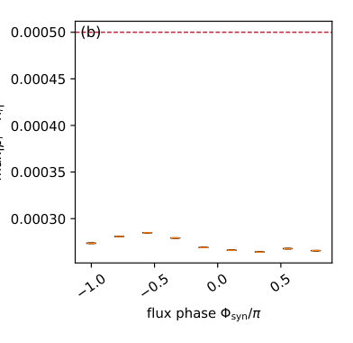
<figcaption class="paper-figure-caption"><b>Fig 1.</b> Figure 1: Long-window validation across nine synthetic-flux phases and three independent initial conditions per phase. (a) The largest QR exponents remain negative at every sampled phase. (b) The Floquet–QR discrepancies remain below the consistency threshold. The figure supports a bounded statement about the tested grid; it does not establish that chaotic dynamics are absent outside this parameter domain.</figcaption>
</figure>
<figure class="paper-figure-card">
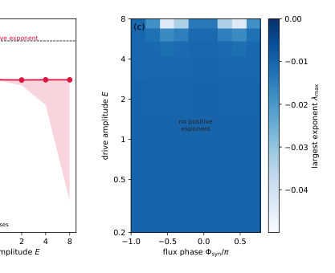
<figcaption class="paper-figure-caption"><b>Fig 2.</b> Figure 2: Full-spectrum transition map at weak coupling. (a) All six Lyapunov exponents versus the synthetic-flux phase at drive E = 0.2; the two cavity- dominated exponents (lower panel, near −κ/2 ≈−0.5) and the four mechani- cal exponents (upper panel, near −γ/2 ≈−0.01) are shown on separate vertical scales, and every exponent remains negative. (b) Largest (most marginal) ex- ponent versus drive amplitude, with the phase-to-phase spread shaded; it stays negative across E ∈[0.2, 8.0]. (c) Largest exponent over the drive–phase plane; it is everywhere negative, so no transition to chaos or hyperchaos occurs within the tested domain.</figcaption>
</figure>
<figure class="paper-figure-card">
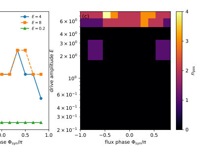
<figcaption class="paper-figure-caption"><b>Fig 3.</b> Figure 3: Full-spectrum hyperchaos transition map at strong optomechanical cou- pling (g1 = 0.3, g2 = 0.27, γ1,2 = 0.02, ∆= −ωm; model-level parameters lying ∼2500× beyond silicon anchors). (a) All six Lyapunov exponents versus the synthetic-flux phase at drive E = 4.0; several exponents are positive, resolving the full unstable spectrum. (b) Hyperchaos order (number of exponents above the fixed strong threshold 1 × 10−3) versus phase at E = 0.2, 4.0 and 8.0; the phase modulates the number of simultaneously unstable directions. (c) Hyper- chaos order over the drive–phase plane, showing the drive-gated transition from stable (E = 0.2) to hyperchaotic (E = 8.0, up to four positive exponents)....</figcaption>
</figure>
<figure class="paper-figure-card">
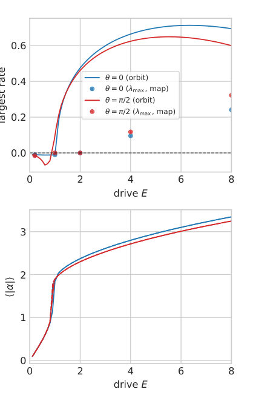
<figcaption class="paper-figure-caption"><b>Fig 4.</b> Figure 4: Drive-axis bifurcation continuation at strong optomechanical coupling. (a) Maximum Floquet multiplier magnitude of the drive-locked orbit versus drive amplitude E at θ = 0 and θ = π/2 (upward and downward continuation); the dashed line marks the unit circle and the vertical lines locate the refined first bifurcation points. (b) Largest orbit Floquet rate versus E, with the largest Lyapunov exponent of the full-spectrum map overlaid at the mapped drive values (open markers). (c) Number of unstable multipliers (|µ| &gt; 1). (d) Mean cavity amplitude over the orbit period. The first loss of linear stability is a Neimark– Sacker complex-pair crossing at E∗= 1.060 (θ = 0) and E∗= 0.975 (θ...</figcaption>
</figure>
<figure class="paper-figure-card">
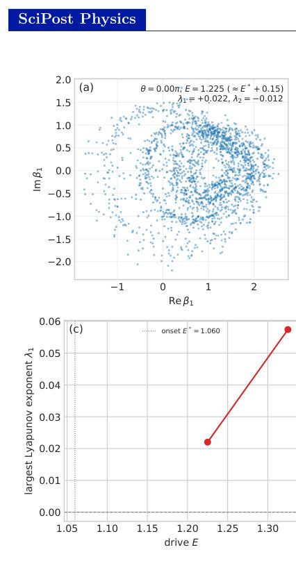
<figcaption class="paper-figure-caption"><b>Fig 5.</b> Figure 5: Observation of the Neimark–Sacker torus. (a),(b) Stroboscopic Poincaré sections (projected onto ℜβ1, ℑβ1) of the perturbed drive-locked orbit just above the onset at θ = 0 and θ = π/2, showing an invariant closed curve. (c),(d) Largest Lyapunov exponent versus drive, small positive just above the onset and growing with drive; the vertical line marks the onset E∗.</figcaption>
</figure>
</div>

<p><strong>Summary.</strong> This work models a complex dissipative optomechanical system to demonstrate that a synthetic-flux phase can precisely control the degree of hyperchaos. While the control of chaos is robustly shown, the study concludes that this flux control does not translate into a measurable enhancement for force sensing on the chaotic attractor, suggesting limitations in the sensing protocol.</p>
<p><strong>Why it may be interesting.</strong> It combines advanced nonlinear dynamics (hyperchaos control) with quantum measurement theory (Fisher information) within the context of cavity optomechanics, providing a rigorous, albeit model-level, testbed for quantum control.</p>
<details>
<summary>Detailed structure</summary>
<p><strong>Main problem.</strong> The study investigates the control of hyperchaos order and the performance of matched-resource sensing in a dissipative optomechanical system using a synthetic-flux phase.</p>
<p><strong>Main result.</strong> The synthetic-flux phase successfully controls the hyperchaos order up to four unstable Lyapunov directions, but the matched-resource sensing protocol yields no flux-induced enhancement on the chaotic attractor.</p>
<p><strong>Method.</strong> The analysis employs advanced dynamical systems diagnostics, including calculating the full Lyapunov spectrum, analyzing the Poincaré map via monodromy multipliers, and evaluating the matched Fisher information.</p>
<p><strong>Model / system.</strong> The system is a dissipative optomechanical model comprising one cavity and two mechanical resonators, analyzed using semiclassical equations of motion derived from a Hamiltonian.</p>
<p><strong>Key observables.</strong> Hyperchaos order (number of positive Lyapunov exponents), Matched Fisher gain, Neimark-Sacker bifurcation points, and Lyapunov exponents.</p>
<p><strong>Important parameters / regimes.</strong> Synthetic-flux phase ($\Phi_{syn}$), Drive amplitude ($E$), Coupling strengths ($g_1, g_2$), and damping rates ($\kappa, \gamma$).</p>
<p><strong>Assumptions / limitations.</strong> The strong-coupling regime explored is highly idealized and far beyond current experimental anchors; the analysis relies on consistency checks across multiple diagnostic tools.</p>
<p><strong>Figures summary.</strong> Figures illustrate the validation of consistency metrics (QR exponents), the dependence of Lyapunov exponents on drive amplitude and flux phase, and the correlation dimension of the attractor.</p>
<p><strong>Paper structure.</strong> The paper progresses by establishing the model, detailing the consistency checks (Lyapunov-Floquet), demonstrating flux control over hyperchaos order, and finally analyzing the sensing gain on the resulting chaotic attractor.</p>
</details>
<details>
<summary>Abstract</summary>
<p>Within a normalised six-dimensional model of dissipative optomechanics (one cavity + two mechanical resonators), a synthetic-flux phase $Φ_{\rm syn}$ selects the \emph{order} of a drive- and coupling-gated hyperchaos transition---up to four simultaneously unstable Lyapunov directions, beyond any reported single-mode benchmark---while the same matched-resource force-sensing protocol yields no flux-induced enhancement on the chaotic attractor. Building on the topology of Muthukumar \emph{et al.}~[PR Applied \textbf{24}, 014053 (2025)], a phase-consistent Floquet--Lyapunov protocol (cross-checked by monodromy multipliers, dissipative volume balance and a 180-run three-seed audit) localises a Neimark--Sacker bifurcation at $E^{*}=\num{1.060}$ ($θ=0$). At a weakly coupled reference the matched Fisher gain reaches at most $\num{1.32}\times$ (flux-off) and $\num{1.16}\times$ (single-mode), with Monte-Carlo median $\num{1.039}\times$ (90\,\% CI $[\num{1.025},\num{1.053}]$); on the chaotic attractor the identical protocol returns a null result ($\mathcal{G}_{A/B}=\num{1.039}\pm\num{0.014}$). Truncated-Fock and truncated-Wigner checks support the mean-field description at selected points. Both the hyperchaos classification and the sensing result remain strictly model-level: the strong-coupling sector explored here lies $\num{2542}\times$ beyond anchored silicon optomechanical couplings. Closing that gap requires a measured inter-resonator hopping $J_m$ and fixed bath temperatures.</p>
</details>
<p><sub><a href="#top">↑ back to top</a></sub></p>

<p><a id="paper-2609.02503"></a></p>
<h3 id="single-shot-fidelity-reveals-hard-and-soft-limits-a-universal-yardstick-for-photon-number-resolving-detectors"><a href="http://arxiv.org/abs/2609.02503v1">Single-Shot Fidelity Reveals Hard and Soft Limits: A Universal Yardstick for Photon-Number-Resolving Detectors</a></h3>
<p><strong>Authors:</strong> Tetsuya Tsuruta, Akio Yoshizawa, Daiji Fukuda<br>
<strong>Type:</strong> theory · <strong>Category:</strong> quantum information and computing · <strong>PDF:</strong> <a href="https://arxiv.org/pdf/2609.02503v1">https://arxiv.org/pdf/2609.02503v1</a><br>
<strong>Analysis basis:</strong> full PDF text, analyzed in chunks
<strong>Topic relevance:</strong> <code>quantum measurements</code> <strong>3/5</strong> · <code>Full counting statistics</code> <strong>1/5</strong> · <code>QC/QI experiment</code> <strong>1/5</strong> · <code>analog quantum simulation</code> <strong>1/5</strong> · <code>quantum optics experiment</code> <strong>1/5</strong></p>
<div class="figure-strip-hint">↔ Scroll figures horizontally</div>
<div class="paper-figures-scroll">
<figure class="paper-figure-card">
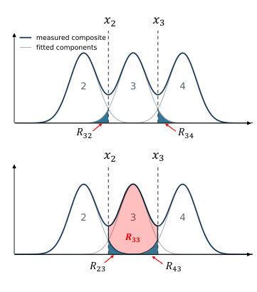
<figcaption class="paper-figure-caption"><b>Fig 1.</b> Figure 1: A concrete example of the resolution confusion matrix Rab, cen- tered on a = 3. The horizontal axis is the true photon number and the vertical axis is the reported photon number. The diagonal element R33 car- ries the dominant weight, with leakage into neighboring photon numbers, R32 and R34, appearing as off-diagonal elements. This matrix represents single-shot misidentification arising from finite energy resolution alone.</figcaption>
</figure>
<figure class="paper-figure-card">
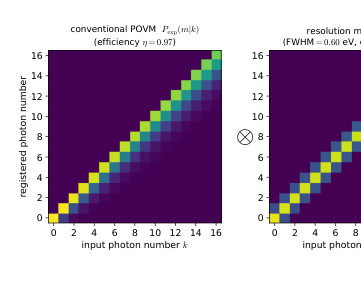
<figcaption class="paper-figure-caption"><b>Fig 2.</b> Figure 2: Construction of the single-shot POVM. Shown here for illustra- tion is a 1550 nm photon measurement with detection efficiency 97 % and resolution 0.6 eV. Composing the conventional POVM Pexp(m|k), which in- cludes only the detection efficiency (η) and small residual label errors (left), with the resolution confusion matrix Rmn defined in Fig. 1 (center), yields the single-shot POVM Pss(n|k) = P m Pexp(m|k)Rmn (right), which carries single-shot misidentification due to the overlap of neighboring peaks as off- diagonal elements.</figcaption>
</figure>
<figure class="paper-figure-card">
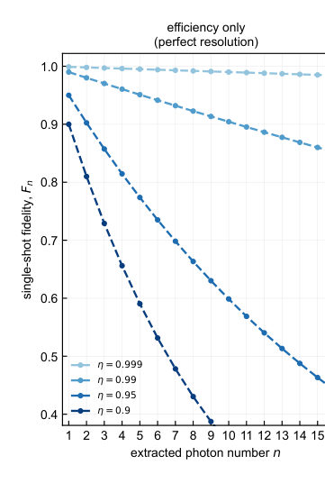
<figcaption class="paper-figure-caption"><b>Fig 3.</b> Figure 3: Dependence of single-shot fidelity Fk on the heralded photon number k, for a 1550 nm photon measurement. Horizontal axis: heralded photon number k; vertical axis: Fk (linear scale). (a) Energy resolution fixed, detection efficiency η varied (e.g., η = 1.0, 0.99, 0.95, 0.90). (b) De- tection efficiency fixed at η = 1, energy resolution FWHM varied over 0.20, 0.30, 0.40, 0.50, 0.60 eV. Overlaying the two series shows that detec- tion efficiency and resolution each independently degrade Fk.</figcaption>
</figure>
<figure class="paper-figure-card">
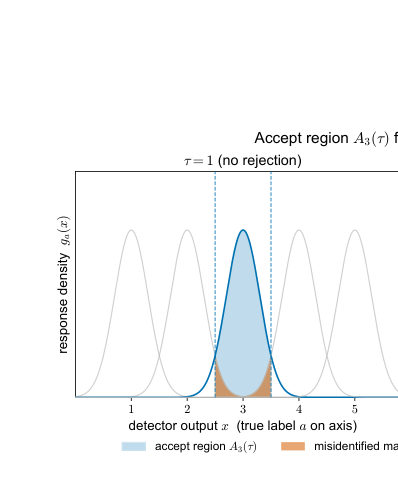
<figcaption class="paper-figure-caption"><b>Fig 4.</b> Figure 4: Schematic of the accept region. For the confusion matrix centered on a = 3, the accept regions for τ = 1 (no rejection, the ordinary equal- likelihood boundary) and for τ &gt; 1 are shown side by side. For τ &gt; 1, reject bands appear near the boundaries with neighboring peaks; the figure shows both the contraction of the accept region toward the center and the fraction of events falling into the reject bands.</figcaption>
</figure>
<figure class="paper-figure-card">
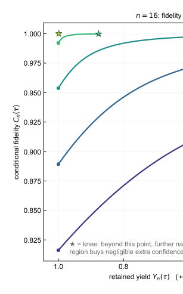
<figcaption class="paper-figure-caption"><b>Fig 5.</b> Figure 5: Trade-off between fidelity and generation rate via the accept re- gion. For a fixed target photon number n, sweeping the threshold τ from 1 to τ ∗traces out the yield Yn(τ) (horizontal axis, corresponding to the generation rate sacrificed) against the conditional fidelity Cn(τ) (vertical axis). Curves are shown for several values of energy resolution. Each curve terminates at the optimum point τ ∗beyond which raising τ no longer helps (star). Detectors with better resolution reach higher Cn, and sacrifice less generation rate to reach a given Cn.</figcaption>
</figure>
</div>

<p><strong>Summary.</strong> This paper introduces a novel single-shot fidelity metric to rigorously evaluate Photon-Number-Resolving (PNR) detectors. It overcomes the limitations of standard ensemble averaging by explicitly separating hardware efficiency loss from errors caused by finite energy resolution. The resulting metric allows for the first direct, quantitative comparison of diverse detector technologies for use in photonic quantum computing.</p>
<p><strong>Why it may be interesting.</strong> This work provides a crucial, quantitative benchmark for quantum hardware, directly linking fundamental detector physics (resolution) to the operational requirements of quantum computation.</p>
<details>
<summary>Detailed structure</summary>
<p><strong>Main problem.</strong> Conventional fidelity metrics for Photon-Number-Resolving (PNR) detectors are insufficient because they fail to quantify single-shot misidentification errors arising from finite energy resolution.</p>
<p><strong>Main result.</strong> The authors introduce a single-shot fidelity metric that separates hardware efficiency loss from resolution-driven misidentification, allowing for a universal, direct comparison across different detector types.</p>
<p><strong>Method.</strong> They combine an efficiency-based POVM with a resolution-driven confusion matrix to construct a single-shot measurement probability, $P_{ss}(n|k)$.</p>
<p><strong>Model / system.</strong> The study focuses on PNR detectors essential for photonic quantum computing, comparing architectures like Transition-Edge Sensors (TES) and SNSPDs.</p>
<p><strong>Key observables.</strong> Single-shot fidelity ($F_k$), detection efficiency ($\eta$), and the resolution confusion matrix ($\mathbf{R}_{ab}$).</p>
<p><strong>Important parameters / regimes.</strong> Photon number ($k$), detection efficiency ($\eta$), and the acceptance region ($   au$) used to define measurement boundaries.</p>
<p><strong>Assumptions / limitations.</strong> The framework assumes the detector output retains a gradient of confidence about the true photon number, and Gaussian approximations are used for modeling detector responses.</p>
<p><strong>Figures summary.</strong> Figures illustrate the construction of the single-shot POVM, showing how the composition of efficiency and resolution matrices yields the final fidelity, and compare $F_k$ vs. $k$ for different detector types and operating regimes.</p>
<p><strong>Paper structure.</strong> The paper first establishes the inadequacy of ensemble-averaged metrics, then develops the single-shot fidelity framework by composing the POVM and confusion matrix, and finally applies this framework to compare multiple real-world detector architectures.</p>
</details>
<details>
<summary>Abstract</summary>
<p>Photon-number-resolving (PNR) detectors are essential for photonic quantum computing, where a single measurement outcome must reliably herald a specific quantum state. However, detector fidelity is conventionally evaluated using ensemble-averaged statistics obtained from many measurements, which can remain high even when individual photon-number assignments are frequently misidentified. Here we introduce a universal single-shot fidelity that directly quantifies the probability of correctly identifying a photon number in a single measurement. The framework combines an efficiency-based POVM with a resolution-driven confusion matrix derived from the detector response, allowing photon loss and photon-number misidentification to be treated separately and then recombined into a single operational metric. This distinction reveals two fundamentally different limitations. Detection-efficiency loss represents an unrecoverable hardware constraint, whereas resolution-driven misidentification can be reduced by introducing a rejection region, trading generation rate for confidence. Because the metric is defined independently of detector architecture, it enables direct comparison between energy-resolving detectors such as transition-edge sensors and multiplexed click-based detectors on the same footing. Applying the framework to calibration data from three distinct detector architectures, we demonstrate quantitative comparison across photon-number regimes relevant to both discrete-variable and continuous-variable photonic quantum computing. The resulting benchmark provides a common operational metric for evaluating photon-number-resolving detectors and connecting detector performance to photonic quantum-computing requirements.</p>
</details>
<p><sub><a href="#top">↑ back to top</a></sub></p>

<p><a id="paper-2609.02569"></a></p>
<h3 id="thouless-pumping-and-generation-of-squeezed-fock-state-superpositions-in-a-fock-state-lattice"><a href="http://arxiv.org/abs/2609.02569v1">Thouless pumping and generation of squeezed Fock-state superpositions in a Fock-state lattice</a></h3>
<p><strong>Authors:</strong> Ruo Kun Cai, Ling Lin, Chun Wang Wu, Zhi Jiao Deng, Ping Xing Chen<br>
<strong>Type:</strong> theory · <strong>Category:</strong> other · <strong>PDF:</strong> <a href="https://arxiv.org/pdf/2609.02569v1">https://arxiv.org/pdf/2609.02569v1</a><br>
<strong>Analysis basis:</strong> full PDF text, analyzed in chunks
<strong>Topic relevance:</strong> <code>analog quantum simulation</code> <strong>3/5</strong> · <code>interference shaping light</code> <strong>3/5</strong> · <code>Tavis-Cummings &amp; cavity-many-emitter</code> <strong>1/5</strong></p>
<div class="figure-strip-hint">↔ Scroll figures horizontally</div>
<div class="paper-figures-scroll">
<figure class="paper-figure-card">
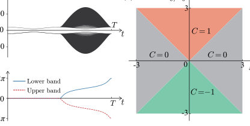
<figcaption class="paper-figure-caption"><b>Fig 1.</b> FIG. 2. Topological characterization of the Fock-state lattice pump. (a) Instantaneous energy spectrum (upper panel) and Berry phase (lower panel) over one pumping cycle. The nu- merical calculation is performed with a cutoffat n = 201 un- der periodic boundary conditions. Parameters: δ0 = 2, s = 0, v0 = 1. (b) Phase diagram of the lower-band Chern number in the (s/v0, δ0/v0) parameter space. The phase boundary |s| = |δ0| separates the topological regime with C = ±1 from the trivial regime with C = 0.</figcaption>
</figure>
<figure class="paper-figure-card">
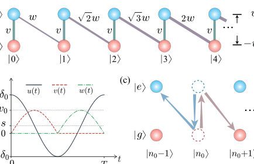
<figcaption class="paper-figure-caption"><b>Fig 2.</b> FIG. 1. Schematic of the Rice–Mele model realized on the Fock-state lattice. (a) In each unit cell labeled by n, the two sublattice sites are represented by |g, n⟩and |e, n⟩. The nearest-neighbor hoppings are v within each unit cell and √nw between adjacent cells, and the sublattice sites are de- tuned by the staggered potential ±u. (b) Periodic driving protocol of the three parameters u(t), v(t), and w(t) over one pump cycle. (c) Adiabatic transport in the dimer limit. Start- ing from either internal state, the particle is transported by one unit cell per cycle, with the direction determined by the initial internal state.</figcaption>
</figure>
<figure class="paper-figure-card">
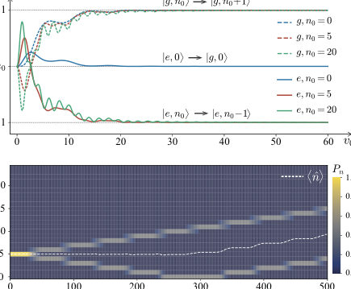
<figcaption class="paper-figure-caption"><b>Fig 3.</b> FIG. 3. Topological pumping dynamics in the Fock-state lat- tice. (a) Mean position ⟨ˆn⟩= ⟨ˆa†ˆa⟩as a function of the pump- ing period T after a single pumping cycle, for different initial states |g, n0⟩or |e, n0⟩with n0 = 0, 5, 20. (b) Probability dis- tribution Pn across each unit cell as a function of the evolution time, starting from the initial superposition 1 √</figcaption>
</figure>
<figure class="paper-figure-card">
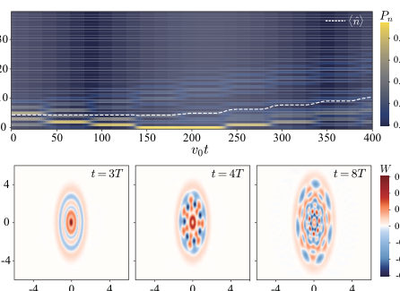
<figcaption class="paper-figure-caption"><b>Fig 4.</b> FIG. 5. Generation of squeezed Fock state superpositions via Thouless pumping in the squeezed Fock-state basis. (a) Probability distribution across each unit cell in the ˆa-basis over the evolution time, starting from the initial state 1 √</figcaption>
</figure>
<figure class="paper-figure-card">
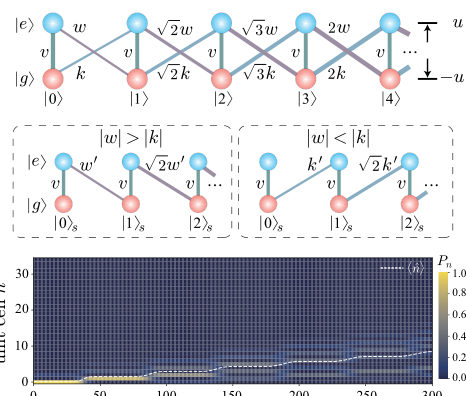
<figcaption class="paper-figure-caption"><b>Fig 5.</b> FIG. 4. Thouless pumping in the squeezed Fock-state basis. (a) Lattice structure in the original Fock-state basis, where both JC and anti-JC couplings coexist. (b) Lattice model in the squeezed Fock-state basis |n⟩s after the squeezing trans- formation, with opposite topological Chern numbers for the two parameter regimes |w| &gt; |k| and |w| &lt; |k|. (c) Proba- bility distribution Pn across each unit cell in the ˆa-basis over the evolution time, with the initial state |g⟩⊗|0⟩s, where the bosonic mode is prepared in a squeezed vacuum state; the white dashed line marks the trajectory of the mean position ⟨ˆa†ˆa⟩. Parameters: v0T = 50, k/w = 0.4, δ0 = 2, s = 0, v0 = 1.</figcaption>
</figure>
</div>

<p><strong>Summary.</strong> This paper applies the concept of Thouless pumping to a Fock-state lattice, a system characterized by bosonic excitations. By analyzing the system's topology, the authors demonstrate quantized transport and extend the method to generate superpositions of squeezed Fock states. This establishes the pumping mechanism as a powerful tool for non-classical quantum state preparation.</p>
<p><strong>Why it may be interesting.</strong> This work directly addresses quantum state engineering using topological principles in a bosonic setting, providing a robust method for generating non-classical states like squeezed Fock state superpositions, which is highly relevant to quantum optics and AMO physics.</p>
<details>
<summary>Detailed structure</summary>
<p><strong>Main problem.</strong> The paper investigates Thouless pumping in a one-dimensional semi-infinite Fock-state lattice and extends this framework to prepare superpositions of squeezed Fock states.</p>
<p><strong>Main result.</strong> Topologically protected quantized transport is demonstrated, and the method successfully generates superpositions of squeezed Fock states, evidenced by interference fringes in the Wigner function.</p>
<p><strong>Method.</strong> The analysis uses topological invariants (Chern number) derived from the overlap matrix in the real-space approach, extending the model via a squeezing transformation.</p>
<p><strong>Model / system.</strong> The system is a Fock-state lattice (FSL) modeled by a Hamiltonian incorporating Jaynes-Cummings and anti-Jaynes-Cummings couplings. The bosonic nature introduces an intrinsic sqrt(n)-dependent coupling, leading to non-uniform hopping.</p>
<p><strong>Key observables.</strong> Quantized directional transport (Chern number $C=\pm 1$), mean position $\langle \hat{n} 
angle$, and the presence of interference fringes in the Wigner function.</p>
<p><strong>Important parameters / regimes.</strong> The analysis is initially restricted to the dimer limit, and the topological robustness depends on adiabatic parameter tuning.</p>
<p><strong>Assumptions / limitations.</strong> The initial analysis relies on the dimer limit due to the complexity introduced by the sqrt(n) dependence under generic modulations.</p>
<p><strong>Figures summary.</strong> Figures illustrate the schematic of the model, the topological phase boundary separating $C=\pm 1$ and $C=0$ regimes, and the pumping dynamics showing quantized plateaus in mean position and Wigner function interference.</p>
<p><strong>Paper structure.</strong> The paper first analyzes Thouless pumping in the dimer limit of the FSL using topological invariants. It then extends the framework by introducing an inter-cell coupling and applying a squeezing transformation to the squeezed Fock-state basis.</p>
</details>
<details>
<summary>Abstract</summary>
<p>In this paper, Thouless pumping in a one-dimensional semi-infinite Fock-state lattice is investigated. A distinctive feature of such lattices is the intrinsic $\sqrt{n}$-dependent coupling arising from the bosonic mode, which leads to spatially nonuniform hopping amplitudes. In the dimer limit, the topological invariants and the quantized transport dynamics in the Fock-state basis are numerically evaluated and analyzed. By introducing an additional inter-cell coupling and applying a squeezing transformation, the framework is then extended to Thouless pumping in the squeezed Fock-state basis, where a topologically protected scheme for preparing superpositions of squeezed Fock states is proposed. This study establishes Thouless pumping in Fock-state lattices as a useful tool for quantum state engineering, shifting the focus from observing topological transport to harnessing it for the preparation of non-classical states of the bosonic mode.</p>
</details>
<p><sub><a href="#top">↑ back to top</a></sub></p>

<p><a id="paper-2609.02609"></a></p>
<h3 id="the-universal-role-of-fragility-on-the-yielding-transition-of-active-glass-under-oscillatory-shear"><a href="http://arxiv.org/abs/2609.02609v1">The Universal Role of Fragility on the Yielding Transition of Active Glass under Oscillatory Shear</a></h3>
<p><strong>Authors:</strong> Arnab Mandal, Roni Chatterjee, Smarajit Karmakar<br>
<strong>Type:</strong> theory · <strong>Category:</strong> disordered systems and neural networks · <strong>PDF:</strong> <a href="https://arxiv.org/pdf/2609.02609v1">https://arxiv.org/pdf/2609.02609v1</a><br>
<strong>Analysis basis:</strong> full PDF text, analyzed in chunks
<strong>Topic relevance:</strong> <code>non-equilibrium universality</code> <strong>3/5</strong> · <code>Frenkel-Kontorova</code> <strong>1/5</strong> · <code>driven-dissipative phase transition</code> <strong>1/5</strong> · <code>scars &amp; prethermalization</code> <strong>1/5</strong></p>
<div class="figure-strip-hint">↔ Scroll figures horizontally</div>
<div class="paper-figures-scroll">
<figure class="paper-figure-card">
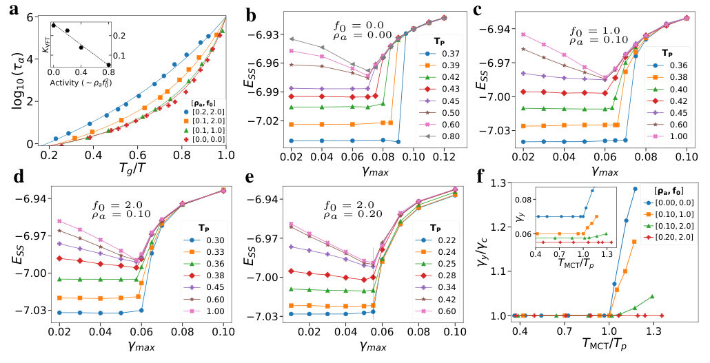
<figcaption class="paper-figure-caption"><b>Fig 1.</b> FIG. 1. Effect of activity on the yielding phase portrait of an active glass. (a) Angell plot of the structural relaxation time τα as a function of rescaled inverse temperature Tg/T, where Tg is the glass transition temperature defined by τα(Tg) = 106. Increasing the active fraction ρa or the self-propulsion force f0 systematically reduces the kinetic fragility KVFT (inset), driving a fragile-to-strong crossover in the glassy dynamics. (b)–(e) Steady-state energy ESS as a function of strain amplitude γmax for the passive case (b) and three activity sets: ρa = 0.10, f0 = 1.0 (c); ρa = 0.10, f0 = 2.0 (d); and ρa = 0.20, f0 = 2.0 (e). In all panels, different curves correspond to different...</figcaption>
</figure>
<figure class="paper-figure-card">
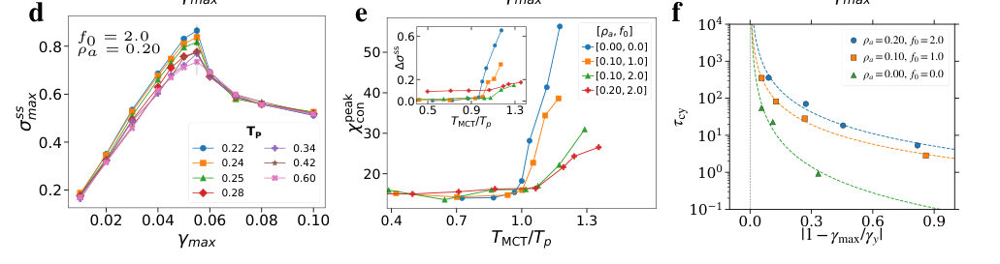
<figcaption class="paper-figure-caption"><b>Fig 2.</b> FIG. 2. Effect of activity on the brittle-to-ductile transition. (a)–(d) Maximum steady-state stress ⟨σ⟩ss max as a function of applied strain amplitude γmax for (a) the passive case, (b) ρa = 0.10, f0 = 1.0, (c) ρa = 0.10, f0 = 2.0, and (d) ρa = 0.20, f0 = 2.0. For the passive glass, the stress drop at yielding becomes increasingly abrupt as TP decreases, characteristic of a brittle-like response. With increasing activity, the sharpness of the stress drop is progressively reduced even for the most well-annealed samples, indicating a systematic activity-driven shift toward more ductile behaviour. (e) Stress susceptibility χpeak con ≡d⟨σ⟩/dγmax as a function of TMCT/TP for all activity sets....</figcaption>
</figure>
<figure class="paper-figure-card">
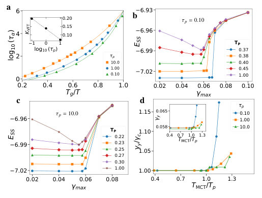
<figcaption class="paper-figure-caption"><b>Fig 3.</b> FIG. 3. Effect of persistent time τp on yielding (ρa = 0.10, f0 = 2.0). (a) Angell plot of τα vs Tg/T for τp ∈{0.10, 1.0, 10.0}. Increasing τp systematically reduces KVFT, driving a fragile-to-strong crossover. (b),(c) Steady- state energy ESS as a function of γmax for τp = 0.10 (b) and τp = 10.0 (c); the τp = 1.0 result was already shown in Fig. 1(d). The temperature dependence of yielding is pro- gressively suppressed with increasing τP , and the transition becomes increasingly ductile. (d) Relative yield point shift γy/γc as a function of TMCT/TP for all three values of τp. The suppression of the shift with increasing τp mirrors the reduction in KVFT, confirming that kinetic fragility...</figcaption>
</figure>
<figure class="paper-figure-card">
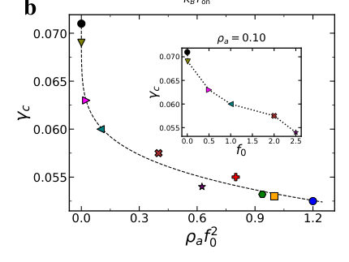
<figcaption class="paper-figure-caption"><b>Fig 4.</b> FIG. 4. Dependence of the critical yield point γc on activity. All poorly annealed samples share a common yield point γc, which is controlled solely by the high-temperature Arrhenius activation energy barrier ∆E. Increasing activity systematically reduces ∆E, and consequently γc. (a) γc com- puted for various combinations of ρa and f0, plotted against the dimensionless activation barrier ∆E/kBTon, where Ton is the onset temperature of Arrhenius behaviour. The data reveal a power-law dependence: even a modest level of activ- ity substantially reduces γc, while beyond a threshold activity level, γc saturates and becomes insensitive to further increases in activity. Black dashed curve is...</figcaption>
</figure>
<figure class="paper-figure-card">
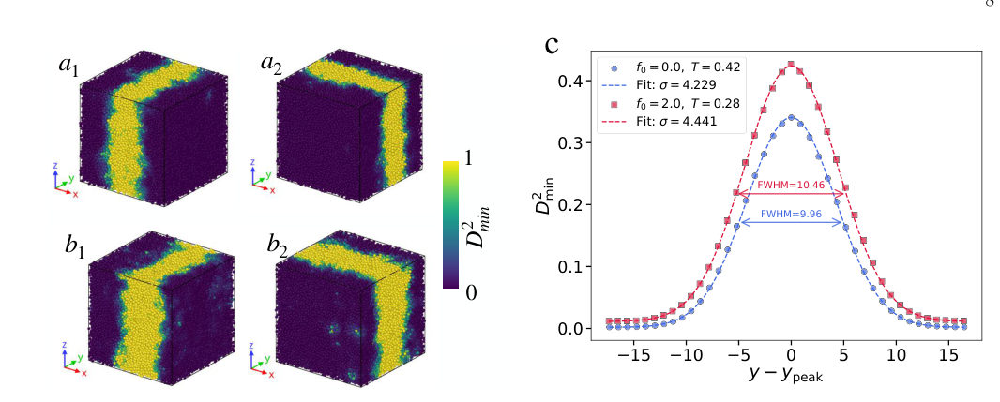
<figcaption class="paper-figure-caption"><b>Fig 5.</b> FIG. 5. Shear Band formation in active and passive glasses. Non-affine displacement D2 min, computed every 10 cycles to improve shear band resolution, sheared in the xy-plane just above the yield point. (a1, a2) Passive glass prepared at TP = 0.42, sheared at γmax = 0.075 (just above γy ∼0.072). Depending on the realisation, the shear band forms either along the shear direction (x) as in (a1), or perpendicular to it (y) as in (a2), illustrating the stochastic nature of shear band nucleation. (b1, b2) Active glass (ρa = 0.20, f0 = 2.0) prepared at TP = 0.28, sheared at γmax = 0.06 (just above γy ∼0.055), showing the same two orientations in different realisations. In both cases, the active...</figcaption>
</figure>
</div>

<p><strong>Summary.</strong> This work uses molecular dynamics simulations to study active glasses, showing that self-propulsion systematically reduces the material's kinetic fragility. This activity-induced change fundamentally alters the mechanical response, making the material more ductile and establishing fragility as a universal descriptor for yielding in both passive and active amorphous solids.</p>
<p><strong>Why it may be interesting.</strong> While focused on classical soft matter, the concept of tuning material response (brittle to ductile) via an active driving force is relevant to non-equilibrium dynamics and energy dissipation in complex quantum or mesoscopic systems.</p>
<details>
<summary>Detailed structure</summary>
<p><strong>Main problem.</strong> The study investigates how the introduction of activity (self-propulsion) modifies the fundamental physical parameter, kinetic fragility, that governs the yielding transition in amorphous solids.</p>
<p><strong>Main result.</strong> Activity systematically reduces kinetic fragility, shifts the mechanical response from brittle to ductile, and establishes kinetic fragility as a unifying parameter for yielding in both passive and active glasses.</p>
<p><strong>Method.</strong> Molecular Dynamics (MD) simulations are used to model the system's response to oscillatory shear, analyzing structural relaxation and mechanical failure.</p>
<p><strong>Model / system.</strong> The model uses a Kob-Andersen glass former doped with Run-and-Tumble (RTP) active particles, simulating the system's dynamics under oscillatory shear stress.</p>
<p><strong>Key observables.</strong> Kinetic fragility ($K_{	ext{VFT}}$), common yield point ($\gamma_c$), yield strain ($\gamma_y$), stress relaxation profiles, and shear band morphology.</p>
<p><strong>Important parameters / regimes.</strong> Activity parameters ($
ho_a, f_0,  au_p$), temperature ($T$), and shear strain amplitude ($\gamma_{max}$).</p>
<p><strong>Assumptions / limitations.</strong> The analysis relies on extending the concept of kinetic fragility, previously established for passive glasses, to the active regime.</p>
<p><strong>Figures summary.</strong> Figures illustrate the evolution of structural relaxation time ($  au_\alpha$) with activity, the shift from brittle to ductile yielding behavior, and the dependence of the yield point on thermal history.</p>
<p><strong>Paper structure.</strong> The paper first establishes the role of fragility in passive glasses, then introduces active particles via MD simulations, and finally quantifies how activity systematically modifies the yield point, mechanical response, and underlying critical dynamics.</p>
</details>
<details>
<summary>Abstract</summary>
<p>The yielding transition marks the onset of irreversible plastic deformation in amorphous solids and plays a central role in determining the mechanical stability and failure of metallic glasses, colloidal suspensions, and biological assemblies. Despite extensive research, the microscopic factors governing the nature of yielding, particularly the transition between brittle and ductile mechanical responses, remain poorly understood. Recent studies have identified kinetic fragility as a key parameter governing yielding in passive glasses; whether this connection persists in active glasses remains open. Here, using molecular dynamics simulations of a Kob-Andersen glass former doped with Run-and-Tumble (RTP) active particles under oscillatory shear, we show that activity systematically reduces kinetic fragility and consequently alters the mechanical response. The common yield point $γ_c$ decreases monotonically with activity and exhibits a power-law dependence on the Arrhenius activation barrier. Increasing activity suppresses the dependence of the yield strain on thermal history and transforms the response from brittle-like to increasingly ductile, with smoother stress relaxation and reduced stress discontinuities. The timescale to reach steady state near yielding retains a critical power-law divergence, indicating that activity does not alter the underlying critical character of the transition. Active glasses also develop broader, more diffuse shear bands. Our results establish kinetic fragility as a unifying parameter governing yielding in both passive and active glasses and demonstrate that activity offers a powerful route to tune the mechanical response of amorphous materials.</p>
</details>
<p><sub><a href="#top">↑ back to top</a></sub></p>

<p><a id="paper-2609.02521"></a></p>
<h3 id="universal-fingerprint-of-topological-defect-cores"><a href="http://arxiv.org/abs/2609.02521v1">Universal fingerprint of topological defect cores</a></h3>
<p><strong>Authors:</strong> Zi-Qiang Zhao, Nayun Jia, Zhang-Yu Nie, Hua-Bi Zeng, Jing-Fei Zhang, Xin Zhang<br>
<strong>Type:</strong> theory · <strong>Category:</strong> statistical mechanics · <strong>PDF:</strong> <a href="https://arxiv.org/pdf/2609.02521v1">https://arxiv.org/pdf/2609.02521v1</a><br>
<strong>Analysis basis:</strong> full PDF text, analyzed in chunks
<strong>Topic relevance:</strong> <code>non-equilibrium universality</code> <strong>3/5</strong> · <code>analog quantum simulation</code> <strong>2/5</strong> · <code>Keldysh / 2PI / non-Gaussian methods</code> <strong>1/5</strong></p>
<div class="figure-strip-hint">↔ Scroll figures horizontally</div>
<div class="paper-figures-scroll">
<figure class="paper-figure-card">
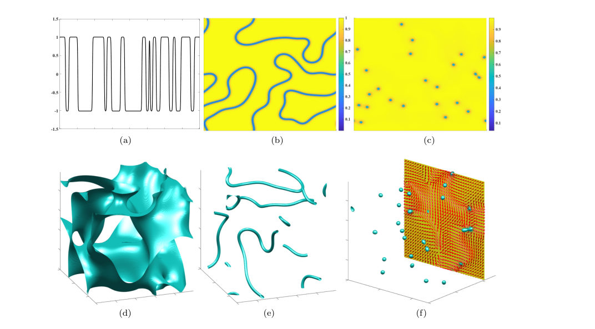
<figcaption class="paper-figure-caption"><b>Fig 1.</b> FIG. 1. Spatial configurations of topological defects of different types and dimensions. (a) Kink (Z2 symmetry). (b) Domain wall (Z2 symmetry). (c) Vortex (U(1) symmetry). (d) 3D domain wall (Z2 symmetry). (e) Vortex line (U(1) symmetry). (f) Monopole (O(3) symmetry)</figcaption>
</figure>
<figure class="paper-figure-card">
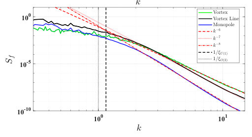
<figcaption class="paper-figure-caption"><b>Fig 2.</b> FIG. 2. Scaling behavior of topological defects for TDGL model of different types and dimensions. The upper panel corresponds to the system with Z2 symmetry, and the lower panel corresponds to the system with U(1) and O(3) symme- tries.</figcaption>
</figure>
<figure class="paper-figure-card">
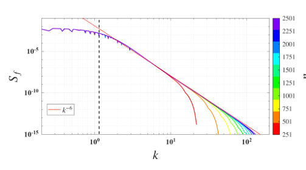
<figcaption class="paper-figure-caption"><b>Fig 3.</b> FIG. 3. Form factor of single-vortex configurations with dif- ferent grid numbers, constructed via Eq. (1).</figcaption>
</figure>
<figure class="paper-figure-card">
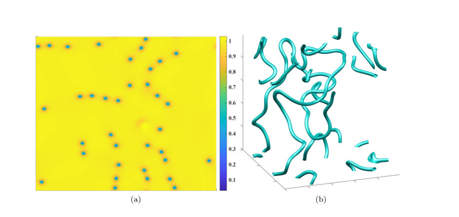
<figcaption class="paper-figure-caption"><b>Fig 4.</b> FIG. 1. Spatial configurations of topological defects of different types and dimensions for GP model. (a) Vortex (U(1) symmetry). (b) Vortex line (U(1) symmetry).</figcaption>
</figure>
<figure class="paper-figure-card">

<figcaption class="paper-figure-caption"><b>Fig 5.</b> FIG. 2. Scaling behavior of topological defects for GP equation of different types and dimensions.</figcaption>
</figure>
</div>

<p><strong>Summary.</strong> This work establishes a universal scaling law, $S_f \propto k^{-(d+p+2)}$, that characterizes the spatial fingerprint of topological defect cores. By deriving this law analytically and verifying it numerically across diverse systems—from superconductors to cosmological backgrounds—the authors provide a powerful new diagnostic tool for studying defect physics.</p>
<p><strong>Why it may be interesting.</strong> The universality of the scaling exponent, independent of the specific microscopic dynamics or underlying system, provides a powerful, model-agnostic diagnostic tool for characterizing topological structures in complex many-body systems.</p>
<details>
<summary>Detailed structure</summary>
<p><strong>Main problem.</strong> The paper aims to discover and analytically prove a universal scaling law for the 'fingerprint' of topological defect cores, an aspect previously unexplored despite existing scaling laws for defect correlations.</p>
<p><strong>Main result.</strong> A universal scaling law, $S_f \propto k^{-(d+p+2)}$, is discovered for the form factor in the region $k>1/\xi$, which is analytically proven to originate from a universal V-shaped cusp at the defect core.</p>
<p><strong>Method.</strong> The authors used theoretical derivation involving the form factor decomposition and confirmed the scaling law through extensive numerical simulations across multiple physical models.</p>
<p><strong>Model / system.</strong> The study examines topological defects (kinks, vortices, domain walls) arising from symmetry breaking in various contexts, including condensed matter (Ginzburg-Landau, Gross-Pitaevskii), cosmology (Klein-Gordon in FRW background), and holographic models (gauge/gravity duality).</p>
<p><strong>Key observables.</strong> The primary observable is the form factor, $S_f(\mathbf{k})$, and the diagnostic is the scaling exponent $-(d+p+2)$.</p>
<p><strong>Important parameters / regimes.</strong> Healing length ($\xi$), spatial dimension ($d$), and defect codimension ($p$).</p>
<p><strong>Assumptions / limitations.</strong> The derivation relies on approximating the core shape using a $  anh$ function, and the numerical simulations test various regimes (weak vs. strong coupling).</p>
<p><strong>Figures summary.</strong> Figures illustrate spatial configurations of various defects (Kink, Vortex) and show the scaling behavior of the form factor $S_f$ for different defect types using the TDGL model.</p>
<p><strong>Paper structure.</strong> The paper progresses from identifying the gap in knowledge regarding defect core fingerprints, deriving the universal scaling law analytically, and then rigorously verifying this scaling law using numerical simulations across four distinct physical frameworks (TDGL, GP, Holographic, FRW).</p>
</details>
<details>
<summary>Abstract</summary>
<p>Topological defects are ubiquitous in physics, arising from condensed matter physics to the early universe. Although there exist many universal scaling laws for correlations between topological defects, such as Porod scaling, the fingerprint of topological defect cores has remained largely unexplored. Here, we discover a universal scaling law in the region $k>1/ξ$, where $ξ$ is the healing length of the topological defects, taking the scaling of the form factor $S_f \propto k^{-(d+p+2)}$, where $d$ is the spatial dimension and $p$ is the defect codimension. We analytically prove that this exponent originates from a universal V-shaped cusp at the defect core and is independent of the underlying system and dynamics. Numerical simulations verify this scaling law in four typical frameworks: the time-dependent Ginzburg-Landau and Gross-Pitaevskii equations in the weak-coupling regime, the gauge/gravity duality model in the strong-coupling regime, and the Klein-Gordon equation in the Friedmann-Robertson-Walker background in cosmology. Our work provides a new probe for studying topological defects in systems ranging from superconductors to cosmological phase transitions.</p>
</details>
<p><sub><a href="#top">↑ back to top</a></sub></p>

<p><a id="paper-2609.02394"></a></p>
<h3 id="a-recursive-module-coupling-algorithm-for-computing-low-energy-eigenstates"><a href="http://arxiv.org/abs/2609.02394v1">A Recursive Module-Coupling Algorithm for Computing Low-Energy Eigenstates</a></h3>
<p><strong>Authors:</strong> Dihang Sun, Nannan Ma, Ching Hua Lee, Tianqi Chen, Jiangbin Gong<br>
<strong>Type:</strong> both · <strong>Category:</strong> numerical methods · <strong>PDF:</strong> <a href="https://arxiv.org/pdf/2609.02394v1">https://arxiv.org/pdf/2609.02394v1</a><br>
<strong>Analysis basis:</strong> full PDF text, analyzed in chunks
<strong>Topic relevance:</strong> <code>analog quantum simulation</code> <strong>3/5</strong> · <code>methods for driven-dissipative</code> <strong>2/5</strong></p>
<div class="figure-strip-hint">↔ Scroll figures horizontally</div>
<div class="paper-figures-scroll">
<figure class="paper-figure-card">

<figcaption class="paper-figure-caption"><b>Fig 1.</b> FIG. 1. Schematic representation of the recursive projec- tion. Two n-site blocks A and B are first coupled through the inter-block interaction J′ zz, giving the projected tensor- product subspace V(2n) k = span{|α⟩A⊗|β⟩B}. Diagonalization of the effective Hamiltonian H(2n) eff and retention of the low- est k states define the renormalized 2n-site block. The same merging rule is then applied recursively to construct the 4n- and 8n-site block bases from V(4n) k and V(8n) k , respectively.</figcaption>
</figure>
<figure class="paper-figure-card">

<figcaption class="paper-figure-caption"><b>Fig 2.</b> FIG. 2. Lowest four energy levels for different subspace dimensions k, obtained at J = 1.0 and h = 0.7. In each panel, the solid curves denote the variational energies obtained in the truncated subspace, while the dotted curves denote the exact energies of the full system. The vertical dashed line marks the boundary of the fidelity criterion F &gt; 0.99; namely, the region to the left of the dashed line corresponds to the parameter range in which the variational low-energy states have fidelity greater than 0.99. The variational energies form upper bounds to the exact levels and converge toward the exact spectrum as k increases.</figcaption>
</figure>
<figure class="paper-figure-card">

<figcaption class="paper-figure-caption"><b>Fig 3.</b> FIG. 3. Low-energy spectra for longer transverse-field Ising chains obtained at J = 1.0 and h = 0.7. The four panels correspond to L = 10, 20, 40, 80, respectively. Solid curves denote the low-energy levels obtained from the recursive truncated-subspace construction, while dotted horizontal lines denote the corresponding DMRG reference energies. The results show that increasing the subspace dimension k improves the low-energy spectrum, with the convergence being more rapid for shorter chains and gradually more demanding as the system size increases.</figcaption>
</figure>
<figure class="paper-figure-card">

<figcaption class="paper-figure-caption"><b>Fig 4.</b> FIG. 4. Ground-state fidelity as a function of the subspace dimension k for longer transverse-field Ising chains, obtained at J = 1.0 and h = 0.7. The three curves correspond to system sizes L = 10, L = 20, and L = 40, respectively. The horizontal dashed line marks the reference value F = 0.99.</figcaption>
</figure>
<figure class="paper-figure-card">

<figcaption class="paper-figure-caption"><b>Fig 5.</b> FIG. 5. Energy gap ∆= E1 −E0 as a function of the transverse-field ratio g, obtained at J = 1.0. The four panels correspond to L = 10, 20, 40, 80, respectively. For each system size, the solid curves show the results obtained from the recursive truncated- subspace construction with k = 4, 8, 16, 32, while the black dashed curve denotes the DMRG reference result. The vertical dashed line marks the critical point g = 1.</figcaption>
</figure>
</div>

<p><strong>Summary.</strong> This paper introduces a recursive module-coupling algorithm to tackle the exponential complexity of finding many-body eigenstates. It works by iteratively building the low-energy subspace from smaller, coupled modules, offering a speedup over standard methods like DMRG. The approach is validated both through classical error analysis and demonstrated feasibility on current quantum processors.</p>
<p><strong>Why it may be interesting.</strong> It provides a systematic, hardware-compatible framework for approximating ground and low-lying excited states, which is crucial for simulating complex quantum materials or quantum dynamics on near-term quantum hardware.</p>
<details>
<summary>Detailed structure</summary>
<p><strong>Main problem.</strong> The core challenge is efficiently finding the low-lying eigenstates of large, many-body Hamiltonians, which suffers from exponential computational scaling.</p>
<p><strong>Main result.</strong> The proposed recursive module-coupling algorithm offers a computationally advantageous alternative to methods like DMRG, achieving state preparation in a modular, scalable manner.</p>
<p><strong>Method.</strong> The method recursively decomposes the system into smaller, locally-coupled modules, constructing the low-energy variational basis from the module eigenstates at each merge step.</p>
<p><strong>Model / system.</strong> The work applies to general many-body systems modeled by local lattice Hamiltonians, often analyzed using a Hamiltonian partitioned into coupled modules (H = H_A + H_B + V).</p>
<p><strong>Key observables.</strong> Low-lying eigenstates, energy gap, and state preparation fidelity.</p>
<p><strong>Important parameters / regimes.</strong> System size (L), truncation level (k), and the size of the elementary module (L_0).</p>
<p><strong>Assumptions / limitations.</strong> The low-energy eigenstates are assumed to have dominant support within the product space formed by the low-energy subspaces of the subsystems.</p>
<p><strong>Figures summary.</strong> Figures illustrate the schematic recursive projection process, the required minimum subspace dimension (k_min) for target fidelity, and the reduction of error density when increasing the initial block size (L_0).</p>
<p><strong>Paper structure.</strong> The paper introduces the modular projected eigensolver and its recursive construction, followed by classical numerical demonstrations, and concludes with detailed error scaling analysis and hardware-compatible quantum circuit formulations.</p>
</details>
<details>
<summary>Abstract</summary>
<p>Finding the eigenstates of a many-body Hamiltonian is a fundamental challenge in physics and computational science. Since the search space grows exponentially with system size, numerous classical and quantum algorithms have been developed to address this problem. A practical strategy is to identify a physics-informed low-dimensional subspace that effectively accommodates the low-lying eigenstates, thereby reducing the computational complexity. In this paper, we propose a recursive module-coupling algorithm, which iteratively treats a system as a composition of locally-coupled smaller modules, with low-energy subspace estimated successively according to the same recursive structure. Unlike the density matrix renormalization group (DMRG) approach that optimizes a global matrix product state through repeated local sweeps and obtains excited states sequentially, our algorithm constructs a physically tailored variational basis from module eigenstates and obtains several low-energy states on an equal footing, leading to substantial speedups if targeting moderate accuracy. Our proposed method further leads naturally to a recursive quantum variational algorithm, providing a systematic and modular circuit-construction framework compatible with contemporary gate-based quantum architectures. At each recursive level, block encoders are trained to map logical basis states onto the retained physical subspace, within which a variational circuit is subsequently optimized.Such a quantum-circuit implementation provides not only a quantum multistate eigensolver, but also a systematic prescription for hierarchically constructing quantum state-preparation circuits. Classical simulations demonstrate the accuracy and efficiency of the proposed method, whereas experiments on IBM quantum processors show that eigenstate preparation with reasonable fidelities is achievable even in the current NISQ era.</p>
</details>
<p><sub><a href="#top">↑ back to top</a></sub></p>

<p><a id="paper-2609.01904"></a></p>
<h3 id="quantum-circuit-and-tensor-network-implementation-of-the-2d-acoustic-wave-equation"><a href="http://arxiv.org/abs/2609.01904v1">Quantum Circuit and Tensor Network Implementation of the 2D Acoustic Wave Equation</a></h3>
<p><strong>Authors:</strong> Tamas Nemeth, Gabor Vattay<br>
<strong>Type:</strong> theory · <strong>Category:</strong> numerical methods · <strong>PDF:</strong> <a href="https://arxiv.org/pdf/2609.01904v1">https://arxiv.org/pdf/2609.01904v1</a><br>
<strong>Analysis basis:</strong> full PDF text, analyzed in chunks
<strong>Topic relevance:</strong> <code>methods for driven-dissipative</code> <strong>3/5</strong> · <code>analog quantum simulation</code> <strong>2/5</strong></p>
<div class="figure-strip-hint">↔ Scroll figures horizontally</div>
<div class="paper-figures-scroll">
<figure class="paper-figure-card">

<figcaption class="paper-figure-caption"><b>Fig 1.</b> Figure 2: Wavefields originating from the center of the model at location of (1280 m, 1280 m). Upper wavefield is calculated by an FDTD solver and the lower wavefield is by an MPS solver.</figcaption>
</figure>
</div>

<p><strong>Summary.</strong> This work develops a framework to simulate seismic wave propagation by translating the acoustic wave equation into a quantum circuit model. Crucially, they show how this quantum evolution can be deterministically emulated on classical hardware using Matrix Product States (MPS) via Tensor Network techniques. This establishes MPS as a scalable and viable computational tool for large-scale wavefield dynamics.</p>
<p><strong>Why it may be interesting.</strong> While the core physics is seismology, the methodology—translating a continuous PDE evolution into a structured tensor network update—is highly relevant for simulating complex dynamics in quantum many-body systems where exact diagonalization is impossible.</p>
<details>
<summary>Detailed structure</summary>
<p><strong>Main problem.</strong> The paper addresses the challenge of simulating seismic wave propagation governed by the 2D acoustic wave equation in complex media.</p>
<p><strong>Main result.</strong> The authors demonstrate that mapping the wavefield dynamics onto a Tensor Train/Matrix Product State (MPS) representation provides a viable, deterministic classical emulation bridge for simulating large-scale wavefield propagation.</p>
<p><strong>Method.</strong> The simulation uses an explicit Finite-Difference Time-Domain (FDTD) formulation, which is then mapped onto a quantum circuit model and subsequently emulated classically using Matrix Product Operators (MPOs) within the Tensor Network framework.</p>
<p><strong>Model / system.</strong> The physical system is the 2D acoustic wavefield u(x, z, t) governed by the wave equation, simulated using the Marmousi model as a test case.</p>
<p><strong>Key observables.</strong> The resulting 2D seismic wavefields generated by the simulation.</p>
<p><strong>Important parameters / regimes.</strong> The bond dimension $\chi$ in the MPS representation, the time step $\Delta t$, and the CFL stability criterion.</p>
<p><strong>Assumptions / limitations.</strong> The primary assumption is that the MPS representation can accurately emulate the quantum evolution, requiring periodic truncation via SVD to maintain computational tractability.</p>
<p><strong>Figures summary.</strong> Figure 2 compares the 2D seismic wavefields generated by both the standard FDTD solver and the MPS solver for the Marmousi model.</p>
<p><strong>Paper structure.</strong> The paper details the quantum circuit formulation for the FDTD update, maps this to a Tensor Train/MPS representation using MPOs, and validates the MPS solver by comparing its results against the established FDTD solver.</p>
</details>
<details>
<summary>Abstract</summary>
<p>We present a cohesive framework for simulating seismic wave propagation utilizing quantum computing paradigms and their classical tensor network equivalents.   We detail a quantum circuit-based formulation for the explicit finite-difference time-domain (FDTD) solution of the two-dimensional acoustic wave equation and   map this quantum architecture onto a tensor train representation, namely for Matrix Product State (MPS).   The MPS solver enables deterministic simulation of large-scale wavefield dynamics on classical high-performance computing systems.   We demonstrate the MPS representation by computing 2D seismic wavefields on the Marmousi model.   Our results indicate that the MPS representation is a viable direction for computing and scaling wavefield propagation.</p>
</details>
<p><sub><a href="#top">↑ back to top</a></sub></p>

<p><a id="paper-2609.02572"></a></p>
<h3 id="magnetic-field-calibration-free-determination-of-the-hyperfine-constant-math247math-in-ultracold-fermi-gases-of-math248mathk"><a href="http://arxiv.org/abs/2609.02572v1">Magnetic-Field-Calibration-Free Determination of the Hyperfine Constant $A$ in Ultracold Fermi gases of $^{40}$K</a></h3>
<p><strong>Authors:</strong> Yajing Yang, Biao Shan, Yuhang Zhao, Jiahui Shen, Zhuxiong Ye, Liangchao Chen, Zengming Meng, Pengjun Wang, Wei Han, Jing Zhang, Lianghui Huang<br>
<strong>Type:</strong> experiment · <strong>Category:</strong> quantum gases · <strong>PDF:</strong> <a href="https://arxiv.org/pdf/2609.02572v1">https://arxiv.org/pdf/2609.02572v1</a><br>
<strong>Analysis basis:</strong> full PDF text, analyzed in chunks
<strong>Topic relevance:</strong> <code>quantum measurements</code> <strong>3/5</strong> · <code>interference shaping light</code> <strong>1/5</strong></p>
<div class="figure-strip-hint">↔ Scroll figures horizontally</div>
<div class="paper-figures-scroll">
<figure class="paper-figure-card">

<figcaption class="paper-figure-caption"><b>Fig 1.</b> FIG. 1. (a) Energy-level diagram showing the single-photon microwave magnetically insensitive transitions α and β in 40K. (b) Microwave spectra of the two sets of magnetically insensi- tive transitions α and β. The measurements are performed us- ing a Gaussian-shaped π pulse with a duration of 10.5 ms and optimized amplitude under a bias magnetic field of 0.83 G. Here, ωβ0 denotes the resonance frequency for transition β.</figcaption>
</figure>
<figure class="paper-figure-card">

<figcaption class="paper-figure-caption"><b>Fig 2.</b> FIG. 2. Ramsey oscillations on the transition β as a function of the free-evolution time TR at different bias magnetic fields, measured using a square π/2 pulse with duration τp = 0.15 ms for state preparation and readout. The solid lines are fits us- ing a Gaussian phase-diffusion model, while the dashed lines indicate the corresponding Ramsey contrast decay envelopes. Throughout this Letter, each data point represents the aver- age of three independent measurements, and error bars denote one standard deviation.</figcaption>
</figure>
<figure class="paper-figure-card">

<figcaption class="paper-figure-caption"><b>Fig 3.</b> FIG. 3. Resonance frequencies of the α and β transitions versus ODT intensity at different bias magnetic fields. The α (β) data are plotted against the left (right) vertical axis. Here, ωα(β) denotes the resonance frequency at the given magnetic field and ODT intensity, and ω0 α(β) is the corresponding resonance frequency at I = 0 obtained by linear extrapolation. I0 denotes the reference intensity at the center of the ODT formed by two mutually incoherent linearly polarized 1064 nm laser beams propagating in orthogonal directions, with powers of 3.5 W and 2.5 W and waists of approximately 45 µm. Different trap intensities are obtained by proportional scaling of the laser powers at fixed...</figcaption>
</figure>
</div>

<p><strong>Summary.</strong> This paper reports a highly precise, magnetic-field-calibration-free determination of the hyperfine constant A for $^{40}	ext{K}$ using ultracold Fermi gases. By measuring the difference between two magnetically insensitive microwave transitions via Ramsey interferometry, the authors significantly reduce the uncertainty in this fundamental constant. This improved reference value is crucial for advancing high-precision spectroscopy and metrology using alkali atoms.</p>
<p><strong>Why it may be interesting.</strong> This work provides a benchmark measurement for fundamental atomic constants in a highly controlled, quantum gas environment. The technique itself—achieving field independence—is a significant methodological advance for precision measurements in AMO physics.</p>
<details>
<summary>Detailed structure</summary>
<p><strong>Main problem.</strong> The primary goal is to determine the ground-state hyperfine constant A for $^{40}	ext{K}$ with extremely high precision, overcoming the limitations imposed by magnetic field calibration in conventional methods.</p>
<p><strong>Main result.</strong> The authors determined the hyperfine constant A = -h x 285.730536(2) MHz, achieving an absolute uncertainty of only about 2 Hz, which represents an improvement of nearly three orders of magnitude over previous measurements.</p>
<p><strong>Method.</strong> They developed a magnetic-field-calibration-free method by measuring the frequency difference between two magnetically insensitive ('clock') transitions using Ramsey interferometry on an ultracold Fermi gas.</p>
<p><strong>Model / system.</strong> The experiment uses an ultracold Fermi gas of $^{40}	ext{K}$ trapped in an Optical Dipole Trap (ODT). Measurements involve microwave spectroscopy between Zeeman sublevels within the ground-state hyperfine manifold.</p>
<p><strong>Key observables.</strong> Transition frequencies ($\omega_\alpha, \omega_eta$), Ramsey oscillation visibility, and the hyperfine constant A.</p>
<p><strong>Important parameters / regimes.</strong> The measurement is performed over a range of bias magnetic fields (B) and is designed to be insensitive to magnetic field calibration and atomic density variations.</p>
<p><strong>Assumptions / limitations.</strong> The method assumes the AC Stark shift can be accurately removed by extrapolating measurements to zero optical intensity, and the uncertainty budget is calculated by combining contributions from magnetic field fluctuations and AC Stark shifts.</p>
<p><strong>Figures summary.</strong> Figures illustrate energy level diagrams, Ramsey oscillation decay curves, and plots showing the measured hyperfine constant A versus magnetic field and ODT intensity, used for systematic correction.</p>
<p><strong>Paper structure.</strong> The paper details the use of Ramsey spectroscopy on two insensitive transitions to derive a field-independent expression for A. It then rigorously calculates the total uncertainty budget by propagating errors from magnetic field noise and AC Stark shifts, culminating in the final highly precise value for A.</p>
</details>
<details>
<summary>Abstract</summary>
<p>Hyperfine constant $A$ is a key parameter of the hyperfine structure and underpins precision spectroscopy and metrology. In this Letter, we develop a magnetic-field-calibration-free method for determining the ground-state hyperfine constant $A$ in an ultracold $^{40}$K Fermi gas by utilizing a pair of magnetically insensitive ("clock") transitions. This overcomes the stringent magnetic-field calibration requirements of conventional methods. We measure the transition frequency between these two magnetically insensitive transitions with Hz-level resolution over a range of magnetic fields, and obtain the ground-state hyperfine constant $A = -h\times 285.730536(2)\,\mathrm{MHz}$, corresponding to an absolute uncertainty of about $2\,\mathrm{Hz}$. Our value reduces the uncertainty by nearly three orders of magnitude compared with previous determinations, providing a substantially improved reference for high-precision spectroscopy and metrology with $^{40}$K.</p>
</details>
<p><sub><a href="#top">↑ back to top</a></sub></p>

<p><a id="paper-2609.02715"></a></p>
<h3 id="quantum-amplitude-estimation-beyond-power-of-two-schedules"><a href="http://arxiv.org/abs/2609.02715v1">Quantum amplitude estimation beyond power-of-two schedules</a></h3>
<p><strong>Authors:</strong> Farrokh Labib<br>
<strong>Type:</strong> theory · <strong>Category:</strong> quantum information and computing · <strong>PDF:</strong> <a href="https://arxiv.org/pdf/2609.02715v1">https://arxiv.org/pdf/2609.02715v1</a><br>
<strong>Analysis basis:</strong> full PDF text, analyzed in chunks
<strong>Topic relevance:</strong> <code>quantum measurements</code> <strong>3/5</strong> · <code>analog quantum simulation</code> <strong>1/5</strong></p>
<div class="figure-strip-hint">↔ Scroll figures horizontally</div>
<div class="paper-figures-scroll">
<figure class="paper-figure-card">

<figcaption class="paper-figure-caption"><b>Fig 1.</b> FIG. 1. Total-query constants (top) and basin-flip rate (bot- tom) versus the ladder ratio r, for geometric ladders nj = round(rj) capped at nmax ∈{128, 256} with the canonical shot profile (one shot at the deepest level, one more per shal- lower level), 2×104 trials per point. Both scales collapse onto the same curves. C95 is minimized at r ≈1.45–1.5 and C99 at r ≈1.35; at r = 2 (powers of two, dotted line) one trial in six lands in a wrong basin under this profile. Bootstrap 95% confidence intervals are smaller than the markers for C95 and up to ∼15% for C99 at large r; flip rates below 10−3 rest on single-digit event counts and indicate ≈0 rather than precise values.</figcaption>
</figure>
<figure class="paper-figure-card">

<figcaption class="paper-figure-caption"><b>Fig 2.</b> FIG. 2. Worst-case (over θ) rejection exponent E of Eq. (4) against rival offsets d, in units of deepest-level basins, for four ladders at nmax ≈128 with the canonical shot profile. Pow- ers of two (r = 2) and r = 1.8 leave near-zero exponents— unrejected rivals—out to tens of basins; r = 1.45 and 1.25 reject all far rivals strongly. These profiles reproduce the measured ordering of catastrophic-failure rates: for far rivals (&gt; 10 basins) at matched profiles, 2.7% (r=2), 0.7% (r=1.8), 0.005% (r=1.45), ∼0 (r=1.25); the last two rest on one and zero events in 2 × 104 trials.</figcaption>
</figure>
<figure class="paper-figure-card">

<figcaption class="paper-figure-caption"><b>Fig 3.</b> FIG. 3. Estimation error at 95% confidence versus total oracle queries, down to ε95 ≈10−6. Circles (blue): this work (r = 1.45 ladders, canonical shots, 104–5 × 104 trials per point). Squares/triangles: chebAE average and maximum-observed queries at matched achieved error (2000 trials per point, using the implementation of Ref. [11]). Gray line: the published csAE constant [14].</figcaption>
</figure>
<figure class="paper-figure-card">

<figcaption class="paper-figure-caption"><b>Fig 4.</b> FIG. 4. The depth–query trade-off as a family of power laws. Each fixed depth cap M (uniform scaling, s = 1–256) follows</figcaption>
</figure>
</div>

<p><strong>Summary.</strong> This paper presents a significant algorithmic improvement for Quantum Amplitude Estimation (QAE) by optimizing both the measurement schedule and the data processing step. By replacing power-of-two ladders with a geometrically spaced ladder ($r \approx 1.45$) and using an exact maximum-likelihood estimator, the authors achieve state-of-the-art query complexity. This advancement makes quantum estimation more efficient and practically viable for quantum computing applications.</p>
<p><strong>Why it may be interesting.</strong> The work provides concrete, improved algorithmic tools for quantum estimation, which is a fundamental building block for quantum simulation and sensing protocols relevant to AMO physics.</p>
<details>
<summary>Detailed structure</summary>
<p><strong>Main problem.</strong> The paper aims to improve Quantum Amplitude Estimation (QAE) by overcoming limitations in conventional non-adaptive estimation schedules and post-processing techniques.</p>
<p><strong>Main result.</strong> The authors propose a fully parallel, deterministic-schedule estimator using an exact maximum-likelihood estimate and a geometric ladder with ratio $r \approx 1.45$, achieving query complexities matching the best adaptive methods.</p>
<p><strong>Method.</strong> The methodology involves replacing subspace-based post-processing with an exact maximum-likelihood estimate and optimizing the measurement schedule from power-of-two steps to a geometrically spaced ladder.</p>
<p><strong>Model / system.</strong> The underlying model is quantum state estimation for the amplitude $a$ of a marked component, utilizing the Grover iterator $G$ applied $n$ times.</p>
<p><strong>Key observables.</strong> Total query complexity ($C_\delta$), maximum sequential depth ($n_L$), and the achievable error percentile ($\epsilon_{95}$).</p>
<p><strong>Important parameters / regimes.</strong> The optimal geometric ladder ratio $r \approx 1.45$, and the target error $\varepsilon$ (ranging from $3.5	imes 10^{-3}$ to $10^{-6}$).</p>
<p><strong>Assumptions / limitations.</strong> The analysis assumes the standard shot-noise model, and the derived bounds are compared against the Cramér-Rao Lower Bound (CRLB).</p>
<p><strong>Figures summary.</strong> Figures compare total-query constants and basin-flip rates against the ladder ratio $r$, showing the optimal balance near $r \approx 1.45$.</p>
<p><strong>Paper structure.</strong> The paper first identifies the limitations of existing QAE methods, then introduces the improved ML estimator and geometric ladder, deriving the optimal ratio by balancing aliasing and redundancy costs, and finally confirming the performance against state-of-the-art benchmarks.</p>
</details>
<details>
<summary>Abstract</summary>
<p>Non-adaptive quantum amplitude estimation (QAE) fixes its Grover depths in advance, so every circuit can run in parallel, but it has so far needed more queries than the best adaptive methods. We show that most of this gap comes from two conventional choices: subspace-based post-processing and power-of-two depth ladders. We replace the first by the exact maximum-likelihood estimate, one matrix multiplication per batch of estimates, and the second by a geometric ladder with ratio $r \approx 1.45$. The result is a fully parallel, deterministic-schedule estimator with total query complexity $2.8$-$3.1/\varepsilon$ at 95% confidence for target errors from $3.5\times 10^{-3}$ to $10^{-6}$. This matches the average-case complexity of chebAE, the best benchmarked adaptive method, within statistical uncertainty (with the lower point estimate at every scale tested), beats its maximum-observed complexity by $1.6\times$, and needs a maximum sequential depth of only $0.21/\varepsilon$ against chebAE's $2.9/\varepsilon$. Relative to csAE, the best non-adaptive benchmark, the constants improve by 30-35% at 95% and $1.5$-$1.7\times$ at 99% confidence. The optimal ratio has a simple origin. Doubling is the fastest depth growth at which the data can still tell neighboring candidate values apart, so power-of-two ladders sit at the edge of confusion and must buy reliability with extra shots; a slightly denser ladder checks every scale redundantly. An error-probability analysis reproduces the measured failure rates and locates the optimum. The likelihood formulation extends directly to noise-aware estimation, and uniformly scaling the capped ladder covers the depth-limited regime, realizing the optimal trade-off $M N_{\mathrm{tot}} \approx (0.4$-$0.6)/\varepsilon^2$ within $\sim 1.1\times$ of the schedule's Cramér-Rao limit.</p>
</details>
<p><sub><a href="#top">↑ back to top</a></sub></p>

<p><a id="paper-2609.02098"></a></p>
<h3 id="an-entanglement-assisted-stabilizer-framework-for-distributed-sensing-of-local-phases"><a href="http://arxiv.org/abs/2609.02098v1">An Entanglement-Assisted Stabilizer Framework for Distributed Sensing of Local Phases</a></h3>
<p><strong>Authors:</strong> Huidan Zheng, Ilkwon Sohn, Jun Heo<br>
<strong>Type:</strong> theory · <strong>Category:</strong> quantum information and computing · <strong>PDF:</strong> <a href="https://arxiv.org/pdf/2609.02098v1">https://arxiv.org/pdf/2609.02098v1</a><br>
<strong>Analysis basis:</strong> full PDF text, analyzed in chunks
<strong>Topic relevance:</strong> <code>quantum measurements</code> <strong>3/5</strong></p>
<div class="figure-strip-hint">↔ Scroll figures horizontally</div>
<div class="paper-figures-scroll">
<figure class="paper-figure-card">

<figcaption class="paper-figure-caption"><b>Fig 1.</b> Fig. 2 Distributed sensing protocol based on the entanglement-assisted stabilizer structure. The remote halves of the pre-shared ebits acquire local phases and return through independent X-error channels. Joint stabilizer readout provides phase-dependent sensing statistics and return-error syn- dromes, while the encoded logical subsystem remains available as a conditional post-sensing output.</figcaption>
</figure>
<figure class="paper-figure-card">

<figcaption class="paper-figure-caption"><b>Fig 2.</b> Fig. 3 Post-sensing reuse of the encoded state. After local phase acquisition, probe return, and joint stabilizer readout, the conditional encoded state differs from the initial state by a known Pauli transformation and remains available for subsequent encoded operations.</figcaption>
</figure>
<figure class="paper-figure-card">

<figcaption class="paper-figure-caption"><b>Fig 3.</b> Fig. 4 Exact finite-shot RMSE of the estimator ˆθj for M = 20, 100, and 500, evaluated under the binomial measurement model. The horizontal dashed lines indicate the corresponding asymptotic levels 1/ √</figcaption>
</figure>
</div>

<p><strong>Summary.</strong> This paper introduces an entanglement-assisted stabilizer framework for sensing local quantum phases across spatially separated nodes. By leveraging the structure of EAQEC codes, it enables simultaneous phase estimation and error syndrome identification. Crucially, the method guarantees that the encoded logical information survives the sensing process, making it highly relevant for scalable quantum networking protocols.</p>
<p><strong>Why it may be interesting.</strong> This work provides a concrete, structured method for performing distributed quantum measurements while maintaining coherence, which is crucial for scaling quantum networks and distributed quantum computation.</p>
<details>
<summary>Detailed structure</summary>
<p><strong>Main problem.</strong> Developing a robust framework for performing distributed quantum sensing of local phases using entanglement assistance.</p>
<p><strong>Main result.</strong> The framework successfully allows for local phase estimation while ensuring the logical quantum information remains available for subsequent operations, achieving the expected scaling of $1/\sqrt{M}$.</p>
<p><strong>Method.</strong> The authors utilize an entanglement-assisted stabilizer framework built upon extended EAQEC codes, employing joint measurements on remote stabilizer pairs to extract phase information and error syndromes.</p>
<p><strong>Model / system.</strong> The system models spatially separated quantum probes (remote ebit halves) interacting with local phases via Z-axis rotations, followed by an X-type noise channel. The structure is formalized using graph-code theory, exemplified by the [[5,1,3;2]] code.</p>
<p><strong>Key observables.</strong> Phase-dependent measurement statistics from the $X_{B_j}$-containing stabilizer and the return-error syndrome from the $Z_{B_j}$-containing partner stabilizer.</p>
<p><strong>Important parameters / regimes.</strong> The estimation error scales as $1/\sqrt{M}$ for large repetitions $M$, and the framework achieves the available quantum Fisher information.</p>
<p><strong>Assumptions / limitations.</strong> The analysis assumes ideal pre-shared ebits, the remote probes are the active sensing elements, and the return noise is restricted to independent X errors.</p>
<p><strong>Figures summary.</strong> Figures illustrate the graph-code realization (e.g., [[5, 1, 3; 2]]), the structure of the remote leaves, and the necessary adjacency blocks for defining the stabilizer generators.</p>
<p><strong>Paper structure.</strong> The paper first establishes the physical model and the need for the framework. It then details the mathematical structure using graph-code theory to define the necessary stabilizer measurements. Finally, it analyzes the measurement outcomes, proves the state preservation property, and analyzes the metrological scaling.</p>
</details>
<details>
<summary>Abstract</summary>
<p>Distributed quantum sensing requires spatially separated probes to acquire local parameters while maintaining compatibility with network-level quantum information processing. We develop an entanglement-assisted stabilizer framework based on the extended structure of entanglement-assisted quantum error-correcting (EAQEC) codes, in which the remote halves of pre-shared ebits are used directly as local phase probes while the joint state simultaneously carries an encoded logical subsystem. Each remote probe acquires a local Z-axis phase and subsequently returns through an X-type noise channel. Within the extended EAQEC stabilizer structure, the stabilizer containing $X_{B_j}$ provides phase-dependent measurement statistics, whereas its partner containing $Z_{B_j}$ records the corresponding return-error syndrome. A graph-code formulation is introduced to make this structure explicit, together with an illustrative [[5,1,3;2]] construction. We further show that, conditioned on the joint sensing-and-syndrome measurement record, the post-sensing state differs from the original encoded state only by a known Pauli transformation, so that the logical information remains available for subsequent encoded operations. For the local-phase model considered here, the stabilizer readout attains the available quantum Fisher information, while the finite-shot estimator approaches the corresponding $1/\sqrt{M}$ scaling as the number of repetitions increases. The framework therefore provides a common entanglement-assisted stabilizer structure for distributed local-phase sensing, restricted return-error identification, and post-sensing logical-state retention, without relying on an intrinsic metrological enhancement from EAQEC itself.</p>
</details>
<p><sub><a href="#top">↑ back to top</a></sub></p>

<p><a id="paper-2609.02781"></a></p>
<h3 id="conditional-validity-of-quantum-event-classifiers-under-collider-systematics-and-quantum-estimation-uncertainty"><a href="http://arxiv.org/abs/2609.02781v1">Conditional validity of quantum event classifiers under collider systematics and quantum estimation uncertainty</a></h3>
<p><strong>Authors:</strong> Roberto Fernández-Barrios, Iker Pastor-López, Asier González-Santocildes, Pablo García Bringas<br>
<strong>Type:</strong> theory · <strong>Category:</strong> other · <strong>PDF:</strong> <a href="https://arxiv.org/pdf/2609.02781v1">https://arxiv.org/pdf/2609.02781v1</a><br>
<strong>Analysis basis:</strong> full PDF text, analyzed in chunks
<strong>Topic relevance:</strong> <code>quantum measurements</code> <strong>3/5</strong></p>
<div class="figure-strip-hint">↔ Scroll figures horizontally</div>
<div class="paper-figures-scroll">
<figure class="paper-figure-card">

<figcaption class="paper-figure-caption"><b>Fig 1.</b> Fig. 1 Framework. The information-set hierarchy I0→I3 and the fail-closed decision rule. Claims about a frozen deployment are audited under declared information; heuristic sensors may veto certifi- cation but never grant it. At I2, fixed label-stream claims carry anytime-valid per-claim error control; I3 and empirical ledgers use separate coverage gates or calibrated tests. Unresolved claims remain UNRESOLVED.</figcaption>
</figure>
<figure class="paper-figure-card">

<figcaption class="paper-figure-caption"><b>Fig 2.</b> Fig. 2 TES response under the frozen environment grid (five training seeds, development world; ∆AUC = nominal minus shifted AUC, positive = degradation). The TES down-shift sign replicates within this world at the 10−3 scale; the cross-world evaluation later shows that its direction is draw- dependent (§2.4). Adverse combinations are discussed in the text but are not displayed in this panel.</figcaption>
</figure>
<figure class="paper-figure-card">

<figcaption class="paper-figure-caption"><b>Fig 3.</b> Fig. 3 Family response and exact blindness. Label-free sensor response by nuisance family: ∆MMD2</figcaption>
</figure>
<figure class="paper-figure-card">

<figcaption class="paper-figure-caption"><b>Fig 4.</b> Fig. 4 Sensor generalization; (a) development grid, (b) out-of-grid. (a) MMD2 vs replicated |∆AUC| over 28 shift environments (leave-one-nuisance-out evaluation). (b) The frozen sensors on 48 never- seen environments per world (off-grid values and official-prior draws), sensor values archived before targets existed: pooled descriptive rank association is positive in both worlds and for both sensors; rank, not magnitude, is the claim. No IID environment-level p-value is assigned.</figcaption>
</figure>
<figure class="paper-figure-card">

<figcaption class="paper-figure-caption"><b>Fig 5.</b> Fig. 5 Certification landscape. Fraction of claims resolved as a function of the audit-label draw budget n, by claim margin |MT −τ| (darker curves, larger margins). Sampling is with replacement, so n counts labeled observations, not unique experimentally labeled events.</figcaption>
</figure>
</div>

<p><strong>Summary.</strong> This work introduces a robust, information-conditional auditing framework to assess whether claims made by Quantum Machine-Learning classifiers remain valid when subjected to real-world systematic uncertainties and finite quantum measurement noise. Using a collider physics benchmark, the authors show that simple classifier performance metrics are insufficient for scientific inference, concluding that no demonstrable quantum advantage exists over classical methods under their rigorous testing protocol.</p>
<p><strong>Why it may be interesting.</strong> While focused on HEP, the rigorous statistical framework for certifying claims under systematic uncertainty and finite sampling is highly relevant to any field using quantum measurements or complex ML models where systematic error control is paramount.</p>
<details>
<summary>Detailed structure</summary>
<p><strong>Main problem.</strong> The paper addresses the conditional validity of Quantum Machine-Learning (QML) classifiers when deployed in real-world high-energy physics inference pipelines, considering both classical systematic shifts and quantum measurement uncertainties.</p>
<p><strong>Main result.</strong> The authors demonstrate that classifier validity does not guarantee scientific inference validity, and that apparent quantum advantages can be reproduced by matched classical controls, leading them to claim no quantum advantage.</p>
<p><strong>Method.</strong> They develop an information-conditional, fail-closed auditing framework that rigorously tests claims by propagating results through various information sets ($I_0$ to $I_3$) and accounting for finite-shot quantum estimation noise.</p>
<p><strong>Model / system.</strong> The analysis is benchmarked on collider physics data (Higgs-to-$    au  au$ benchmark) using quantum-kernel classifiers (e.g., fidelity kernel $K_Q$) trained on high-dimensional kinematic variables.</p>
<p><strong>Key observables.</strong> Classifier metrics (e.g., AUC), signal-strength coverage, and the status of claims (SUPPORTED, REFUTED, UNRESOLVED) under various systematic variations.</p>
<p><strong>Important parameters / regimes.</strong> The analysis involves multiple nuisance parameters ($   heta$) for feature-level systematics (TES, JES, soft-MET) and varying levels of signal-strength degradation ($\delta$).</p>
<p><strong>Assumptions / limitations.</strong> The framework assumes a 'frozen finite-population batch deployment' snapshot, and the validity guarantee is conditional on the declared sampling protocol and information sets.</p>
<p><strong>Figures summary.</strong> Figure 1 illustrates the information-set hierarchy ($I_0 	o I_3$) and the fail-closed decision rule governing the auditing process.</p>
<p><strong>Paper structure.</strong> The paper establishes the need for information-conditional certification, details the fail-closed auditing framework, applies it to collider data under systematic variations, and concludes by comparing QML results against classical controls to assess true advantage.</p>
</details>
<details>
<summary>Abstract</summary>
<p>Claims about a deployed quantum machine-learning classifier can fail when target data shift or when finite-shot quantum evaluation randomizes the model itself. We develop an information-conditional, fail-closed auditing framework that returns supported, refuted or unresolved verdicts with anytime-valid per-claim error control under a declared sampling protocol. On a Higgs-to-tau-tau collider benchmark, stable classifier metrics do not guarantee valid signal-strength inference: at the studied finite-template statistics, the fixed-template profile can lose coverage, even in shift-free controls, when its templates are estimated independently and template-statistical uncertainty is not modeled explicitly. Across 30 frozen finite-shot quantum-kernel deployments, every realized Gram matrix is propagated through refitting, calibration and threshold selection; in the primary raw pipeline these perturbations leave ranking nearly unchanged yet move thresholded target metrics by about 0.02, flipping ideal-anchored claims, and the diagonal-loading sensitivity decomposes differently. Matched classical controls remove apparent quantum-specific nominal-performance and sensing effects. We claim no quantum advantage.</p>
</details>
<p><sub><a href="#top">↑ back to top</a></sub></p>

<p><a id="paper-2609.01988"></a></p>
<h3 id="contrasting-effects-of-control-on-fidelity-and-fidelity-deviation-in-controlled-teleportation"><a href="http://arxiv.org/abs/2609.01988v1">Contrasting Effects of Control on Fidelity and Fidelity Deviation in Controlled Teleportation</a></h3>
<p><strong>Authors:</strong> Jeonghyeon Shin, Minjin Choi<br>
<strong>Type:</strong> theory · <strong>Category:</strong> quantum information and computing · <strong>PDF:</strong> <a href="https://arxiv.org/pdf/2609.01988v1">https://arxiv.org/pdf/2609.01988v1</a><br>
<strong>Analysis basis:</strong> full PDF text, analyzed in chunks
<strong>Topic relevance:</strong> <code>quantum measurements</code> <strong>3/5</strong></p>
<div class="figure-strip-hint">↔ Scroll figures horizontally</div>
<div class="paper-figures-scroll">
<figure class="paper-figure-card">

<figcaption class="paper-figure-caption"><b>Fig 1.</b> FIG. 1. Fidelity deviation for the standard W state as a function of the controller’s measurement parameter β. All measurements Mβ attain the same maximal average teleportation fidelity FBC(|W⟩ABC) = 8/9, whereas the fidelity deviation depends on β and reaches its minimum ∆BC(|W⟩ABC) at β = π/4.</figcaption>
</figure>
<figure class="paper-figure-card">

<figcaption class="paper-figure-caption"><b>Fig 2.</b> FIG. 2. Effect of controller assistance on the maximal average fidelity and fidelity deviation for randomly sampled three-qubit pure states, with A acting as the controller. For each of the W and GHZ classes, 2000 randomly generated states satisfying 0.5 ≤Ca(ρBC) ≤1 are shown. (a) Difference between the maximal average fidelity with controller assistance and that obtained directly from the reduced state ρBC. (b) Difference between the minimal fidelity deviation with controller assistance and the fidelity deviation obtained directly from the reduced state ρBC. The W-class samples satisfy ∆BC(|ϕ⟩ABC) −∆(ρBC) ≥0, in accordance with Theorem 2, whereas the GHZ-class samples exhibit both positive...</figcaption>
</figure>
</div>

<p><strong>Summary.</strong> This paper investigates controlled quantum teleportation, focusing on two metrics: average fidelity and fidelity deviation. It demonstrates that while control can optimize average fidelity, the fidelity deviation behaves differently, showing that the benefit of control is not uniform across all input states or state classes. These contrasting effects highlight the complexity of characterizing quantum channel performance.</p>
<p><strong>Why it may be interesting.</strong> The investigation into fidelity deviation provides a more nuanced diagnostic tool than average fidelity alone, revealing state-dependent effects of quantum control mechanisms.</p>
<details>
<summary>Detailed structure</summary>
<p><strong>Main problem.</strong> The paper contrasts how quantum control mechanisms affect both the average teleportation fidelity and the fidelity deviation in controlled quantum teleportation.</p>
<p><strong>Main result.</strong> The fidelity deviation depends on the controller's measurement choice even when the average fidelity is maximized, and controller assistance does not universally reduce the fidelity deviation, especially for W-class states.</p>
<p><strong>Method.</strong> The authors derive lower bounds for the fidelity deviation and compare controlled teleportation protocols with direct teleportation using reduced state analysis.</p>
<p><strong>Model / system.</strong> The study analyzes controlled quantum teleportation involving three-qubit pure states ($
ho_{ABC}$), where a controller performs a measurement on one qubit.</p>
<p><strong>Key observables.</strong> Average Teleportation Fidelity ($F$), Fidelity Deviation ($\Delta$), Concurrence of Assistance ($C_a$), and the reduced state $
ho_{BC}$.</p>
<p><strong>Important parameters / regimes.</strong> Three-qubit pure states, W-class states, and GHZ-class states.</p>
<p><strong>Assumptions / limitations.</strong> The analysis is performed specifically for three-qubit pure states.</p>
<p><strong>Figures summary.</strong> Figure 1 shows that for the W state, the fidelity deviation ($\Delta_{BC}$) varies substantially with the controller measurement, even when the average fidelity ($F_{BC}$) is constant. Figure 2 compares the difference in fidelity deviation with and without control for W and GHZ classes.</p>
<p><strong>Paper structure.</strong> The paper reviews standard teleportation fidelity, introduces and analyzes the fidelity deviation ($\Delta$) in controlled teleportation, and finally compares the effects of controller assistance on both $F$ and $\Delta$ for different state classes.</p>
</details>
<details>
<summary>Abstract</summary>
<p>Teleportation performance is commonly characterized by the average teleportation fidelity, while its variation over input states provides additional information captured by the fidelity deviation. In controlled teleportation, the controller's measurement introduces an additional source of fidelity variation through its measurement outcomes. We investigate the fidelity deviation in controlled teleportation with three-qubit pure states. We derive a lower bound on the fidelity deviation and show that it is attainable together with the maximal average teleportation fidelity. Among the measurements attaining the maximal average fidelity, however, the fidelity deviation can vary depending on the controller's measurement. We further examine the effect of controller assistance by comparing controlled teleportation with direct teleportation using the reduced state. Unlike the maximal average fidelity, which cannot decrease with controller assistance, the minimal fidelity deviation is not necessarily reduced by controller assistance. In particular, for any W-class pure state, controller assistance cannot reduce the fidelity deviation. These results reveal contrasting effects of control on teleportation fidelity and its deviation in controlled teleportation.</p>
</details>
<p><sub><a href="#top">↑ back to top</a></sub></p>

<p><a id="paper-2609.02506"></a></p>
<h3 id="disorder-driven-competing-magnetic-interactions-and-glassy-magnetic-behavior-in-quaternary-heusler-alloy-ferumnge"><a href="http://arxiv.org/abs/2609.02506v1">Disorder-driven competing magnetic interactions and glassy magnetic behavior in quaternary Heusler alloy FeRuMnGe</a></h3>
<p><strong>Authors:</strong> Manikantha Panda, Prabuddha Kant Mishra, Sonali S. Pradhan, Aarti Gautam, Bhagyashree Pol, P D Babu, Ashok Kumar Ganguli, V. Kanchana, Tapas Paramanik<br>
<strong>Type:</strong> both · <strong>Category:</strong> disordered systems and neural networks · <strong>PDF:</strong> <a href="https://arxiv.org/pdf/2609.02506v1">https://arxiv.org/pdf/2609.02506v1</a><br>
<strong>Analysis basis:</strong> full PDF text, analyzed in chunks
<strong>Topic relevance:</strong> <code>analog quantum simulation</code> <strong>3/5</strong></p>
<div class="figure-strip-hint">↔ Scroll figures horizontally</div>
<div class="paper-figures-scroll">
<figure class="paper-figure-card">

<figcaption class="paper-figure-caption"><b>Fig 1.</b> Figure 1. (Color online) (a) Upper panel: Rietveld refinement of the room-temperature powder X-ray diffraction pattern of polycrystalline FeRuMnGe. The vertical tick marks indicate the allowed Bragg reflections, while the blue line represents the difference between the observed and fitted profiles. The inset shows the enlarged view of the (200) reflection peak. Lower panel: Simulated X-ray diffraction patterns of FeRuMnGe generated using VESTA software for 25% and 50% B2 disorder. The inset shows the magnified view of the (111) and (200) superlattice reflections for 25% and 50% B2 disorder. (b) Disordered (50% B2) crystal structure of FeRuMnGe. (c) Corresponding Brillouin zone. (d)...</figcaption>
</figure>
<figure class="paper-figure-card">

<figcaption class="paper-figure-caption"><b>Fig 2.</b> Figure 2. (a–c) Electronic band structure and density of states (DOS) of the ordered phase; (d–f) corresponding results for the Fe–Ru and Mn–Ge antisite-disordered phase. The spin-up and spin-down channels are represented by red and blue colors, respectively.</figcaption>
</figure>
<figure class="paper-figure-card">

<figcaption class="paper-figure-caption"><b>Fig 3.</b> Fig. 1(a) shows the room-temperature PXRD pattern of the polycrystalline FeRuMnGe sample along with the Ri- etveld refinement profile, Bragg peak positions, and the corresponding difference curve. The excellent agreement between the observed and calculated patterns confirms the formation of a single-phase compound. The refinement re- veals that FeRuMnGe crystallizes in the LiMgPdSn-type structure with space group F43m (No. 216) and lattice parameter ∼5.898(5) ˚A. The atomic arrangement corre- sponds to Fe occupying the 4a (0, 0, 0) site, Ru 4b ( 1</figcaption>
</figure>
<figure class="paper-figure-card">

<figcaption class="paper-figure-caption"><b>Fig 4.</b> Figure 3. Heisenberg exchange interactions (Jij) as a function of interatomic distance. Panels (a–c) correspond to the ordered structure, showing (a) total exchange interactions, (b) Fe–Fe interactions, and (c) Mn–Mn interactions. Panels (d–f) represent the Fe–Ru and Mn–Ge antisite-disordered structures, displaying (d) total exchange interactions, (e) Fe–Fe interactions, and (f) Mn–Mn interactions. Positive (negative) values of Jij indicate ferromagnetic (antiferromagnetic) coupling.</figcaption>
</figure>
<figure class="paper-figure-card">

<figcaption class="paper-figure-caption"><b>Fig 5.</b> Fig. 4(a–c) presents the temperature-dependent dc- susceptibility χ(T) of FeRuMnGe. The χ(T) curves mea- sured under an applied field of 0.1 T, following zero-field- cooled (ZFC) and field-cooled (FC) protocols, are shown in Fig. 4(a). A clear separation between the ZFC and FC curves is observed below the temperature ≃75 K. Under ZFC conditions, upon cooling below the freezing temper- ature (Tf), the spins undergo collective freezing without any preferred orientation. When a magnetic field is subse- quently applied, the spins attempt to align along the field direction; however, due to intrinsic frustration and compet- ing interactions, the system becomes trapped in metastable states,...</figcaption>
</figure>
</div>

<p><strong>Summary.</strong> This paper explores how structural disorder in the Heusler alloy FeRuMnGe dictates its magnetic properties. By combining X-ray diffraction and DFT calculations, the authors show that antisite disorder introduces competing magnetic interactions. This competition ultimately drives the material into a characteristic cluster-glass magnetic state.</p>
<p><strong>Why it may be interesting.</strong> The investigation of disorder-driven magnetic frustration and the resulting glassy state in a crystalline solid provides a model system for understanding complex many-body interactions in disordered quantum materials.</p>
<details>
<summary>Detailed structure</summary>
<p><strong>Main problem.</strong> The study investigates how atomic disorder influences the magnetic ground state of the quaternary Heusler alloy FeRuMnGe, specifically focusing on the emergence of glassy magnetic behavior.</p>
<p><strong>Main result.</strong> The research establishes a direct link where antisite disorder drives the system to exhibit competing magnetic interactions, resulting in a cluster-glass state coexisting with long-range magnetic order.</p>
<p><strong>Method.</strong> The work combines experimental techniques like X-ray diffraction and magnetization measurements with theoretical calculations using DFT to model the effects of disorder.</p>
<p><strong>Model / system.</strong> The system is the quaternary Heusler alloy FeRuMnGe, which adopts the LiMgPdSn-type structure. Disorder is modeled by considering B2-type antisite intermixing of Fe–Ru and Mn–Ge sites.</p>
<p><strong>Key observables.</strong> B2-type antisite disorder, competing ferromagnetic and antiferromagnetic couplings, cluster-glass state signatures (ZFC/FC separation), and changes in electronic character (half-metallic to metallic).</p>
<p><strong>Important parameters / regimes.</strong> Temperature (especially below 161 K), magnetic field (up to 5 T), and the degree of antisite disorder (e.g., 25% to 50%).</p>
<p><strong>Assumptions / limitations.</strong> The analysis assumes that the observed magnetic behavior is directly governed by the structural disorder introduced via antisite mixing.</p>
<p><strong>Figures summary.</strong> Figures illustrate PXRD patterns showing disorder, electronic band structures comparing ordered vs. disordered states, and magnetization curves showing ZFC/FC separation indicative of spin-glass behavior.</p>
<p><strong>Paper structure.</strong> The paper follows a structure of presenting experimental evidence of disorder (XRD, magnetization), followed by theoretical modeling (DFT calculations of electronic structure and magnetic interactions) to explain the observed magnetic frustration and glassy state.</p>
</details>
<details>
<summary>Abstract</summary>
<p>In this combined experimental and theoretical study, we investigate the role of disorder in governing the magnetic ground state of the quaternary Heusler alloy FeRuMnGe. In the FeRuMnZ (Z = Ga, Si) series, chemical substitution modifies atomic ordering and electronic structure, resulting in distinct magnetic ground states. Motivated by this, we extend the series to FeRuMnGe. X-ray diffraction reveals B2-type antisite disorder, where Fe--Ru and Mn--Ge intermix. Theoretical calculations show that such disorder modifies exchange interactions, leading to competing ferromagnetic and antiferromagnetic couplings, and drives the system from half-metallic to metallic. Magnetic measurements reveal competing interactions, giving rise to a cluster-glass state coexisting with long-range magnetic order. The absence of a thermodynamic signature at $T_f$, together with ac susceptibility and relaxation measurements, supports the presence of short-range magnetic interactions and a glassy magnetic state. The compound exhibits an enhanced magnetic response below $\sim 161$ K and a maximum magnetization of $\sim 1.64~μ_B$/f.u. at 5 T. Overall, this work establishes a direct correlation between antisite disorder, competing exchange interactions, and glassy magnetism in quaternary Heusler alloys. Combined experimental results and theoretical calculations reveal that disorder drives the system from an AFM-dominated state in FeRuMnSi to an FM-dominated state in FeRuMnGe, providing deeper insight into the role of the extent of disorder in governing the magnetic properties of QHAs.</p>
</details>
<p><sub><a href="#top">↑ back to top</a></sub></p>

<p><a id="paper-2609.01771"></a></p>
<h3 id="gadir-a-spatial-topology-preserving-compiler-for-quantum-many-body-systems-simulation"><a href="http://arxiv.org/abs/2609.01771v1">GadIR: A Spatial-Topology Preserving Compiler for Quantum Many-Body Systems Simulation</a></h3>
<p><strong>Authors:</strong> Xiangyu Ren, Yuexun Huang, Zhaohui Yang, Yuchen Zhu, Tsung-Wei Huang, Tsung-Yi Ho, Zhiding Liang, Antonio Barbalace<br>
<strong>Type:</strong> theory · <strong>Category:</strong> quantum information and computing · <strong>PDF:</strong> <a href="https://arxiv.org/pdf/2609.01771v1">https://arxiv.org/pdf/2609.01771v1</a><br>
<strong>Analysis basis:</strong> full PDF text, analyzed in chunks
<strong>Topic relevance:</strong> <code>analog quantum simulation</code> <strong>3/5</strong></p>
<div class="figure-strip-hint">↔ Scroll figures horizontally</div>
<div class="paper-figures-scroll">
<figure class="paper-figure-card">

<figcaption class="paper-figure-caption"><b>Fig 1.</b> Figure 1: Comparison between our proposed framework and the frameworks in previous research [58, 68, 76, 81].</figcaption>
</figure>
<figure class="paper-figure-card">

<figcaption class="paper-figure-caption"><b>Fig 2.</b> Figure 2: Mapping a 2 × 3 Bose-Hubbard model to qubit Hamiltonian, and construct the corresponding GadIR.</figcaption>
</figure>
<figure class="paper-figure-card">

<figcaption class="paper-figure-caption"><b>Fig 3.</b> Figure 3: GadIR syntax. Up: the spatial topology graph for Hamiltonian of many-body system model. Down: the Pauli gadgets corresponding to Hamiltonian terms, including their operators and the edges they cover on topology graph.</figcaption>
</figure>
<figure class="paper-figure-card">

<figcaption class="paper-figure-caption"><b>Fig 4.</b> Figure 5: Examples of GadIR for (a) spin-qubit, (b) fermionic, (c) bosonic and (d) lattice gauge theory models.</figcaption>
</figure>
<figure class="paper-figure-card">

<figcaption class="paper-figure-caption"><b>Fig 5.</b> Figure 4: Comparison of Paulihedral and GadIR on the ability of capturing gate cancellation opportunities. On the left are the Hamiltonian and its spatial topology. On the right are the sequences of Pauli terms ordered by Paulihedral or GadIR approach, while the gate cancellations are highlighted in red. The results show that GadIR gains more CNOT reductions.</figcaption>
</figure>
</div>

<p><strong>Summary.</strong> This paper introduces GadIR, a novel intermediate representation designed to compile quantum many-body Hamiltonians while explicitly preserving the underlying spatial topology of the physical system. By using Pauli gadgets, the compiler frontend performs hardware-agnostic group reductions, leading to significant reductions in circuit overhead when synthesizing programs for various quantum hardware architectures.</p>
<p><strong>Why it may be interesting.</strong> This work directly addresses the crucial bottleneck of mapping complex physical Hamiltonians onto abstract quantum hardware instructions, providing a structured, topology-aware compilation pipeline relevant to all quantum simulation efforts.</p>
<details>
<summary>Detailed structure</summary>
<p><strong>Main problem.</strong> The core problem is efficiently compiling the Hamiltonians of quantum many-body systems into quantum circuits suitable for diverse quantum hardware architectures.</p>
<p><strong>Main result.</strong> The proposed compiler, utilizing GadIR, achieves a significant reduction in compilation overhead across multiple quantum hardware platforms compared to previous state-of-the-art methods.</p>
<p><strong>Method.</strong> The authors introduce GadIR, a Pauli gadget-based intermediate representation that explicitly preserves the spatial topology of the physical model. The compiler uses a hardware-independent group reduction frontend and a topology-guided backend for synthesis.</p>
<p><strong>Model / system.</strong> The framework is tested on canonical quantum many-body systems, including the Bose-Hubbard model and Lattice Gauge Theories, which are mapped onto qubit Hamiltonians defined on specific spatial lattices.</p>
<p><strong>Key observables.</strong> Compilation overhead reduction (e.g., CNOT/CZ count, depth, non-Clifford gate count) across superconducting, neutral-atom, FTQC, and MBQC backends.</p>
<p><strong>Important parameters / regimes.</strong> The complexity and structure of the physical Hamiltonian, the specific quantum hardware architecture targeted, and the lattice size/dimensionality.</p>
<p><strong>Assumptions / limitations.</strong> The primary assumption is that preserving the spatial topology via GadIR leads to a more optimized compilation path than standard Pauli string representations. The analysis relies on specific encoding techniques (e.g., Jordan-Wigner) and Trotterization approximations.</p>
<p><strong>Figures summary.</strong> Figures illustrate the workflow from physical model to Hamiltonian to the GadIR representation, comparing the topological awareness of the proposed method against prior art. Other figures show quantitative comparisons of gate counts and circuit metrics across different hardware backends.</p>
<p><strong>Paper structure.</strong> The paper introduces the limitations of existing Pauli string representations, proposes the GadIR IR to retain spatial topology, details the compiler frontend (group reduction) and backend (Trotterization/scheduling), and validates the approach across multiple physical models and quantum hardware backends.</p>
</details>
<details>
<summary>Abstract</summary>
<p>Simulating quantum many-body systems has been one of the most important applications of quantum computation. For simulation, the Hamiltonian of a physical system is compiled into quantum programs with native instructions for quantum hardware. In previous works, the Hamiltonian is represented as Pauli strings, then compiled and optimized based on the quantum circuit model. Such representation paradigm neglects the spatial topology of original physical models, which is vital information to reducing the overhead of compiling many-body systems Hamiltonians.   To address such neglect, we introduce a spatial-topology preserving compiler for quantum many-body simulation. Using Pauli gadgets as the representations of the Hamiltonian, we introduce our intermediate representation -- GadIR, to preserve the spatial-topology information of original physical models. Our compiler frontend performs the group reduction algorithm based on Pauli gadget model, which is a hardware-independent optimization. Our compiler backend performs trotterization and scheduling on Pauli gadgets, then synthesizes the Pauli gadgets into hardware-native quantum programs. We evaluate our compiler on all the canonical quantum many-body system models, while achieving a significant reduction on compilation overhead regarding four major quantum architectures. Overall, our spatial-topology preserving IR exploits the compilation optimization space for quantum many-body systems Hamiltonian.</p>
</details>
<p><sub><a href="#top">↑ back to top</a></sub></p>
<hr>
<p>
<a href="index.html">← Index</a>
 · <a href="papers_01.html">← Previous</a> · <a href="papers_03.html">Next →</a>
</p>
<hr>

</body>
</html>
